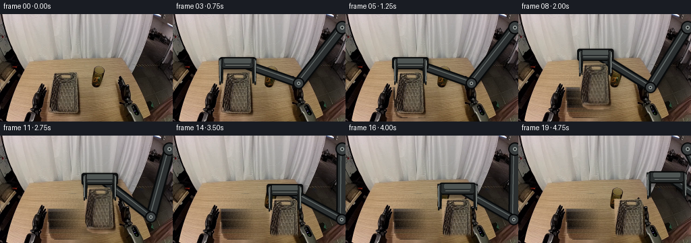
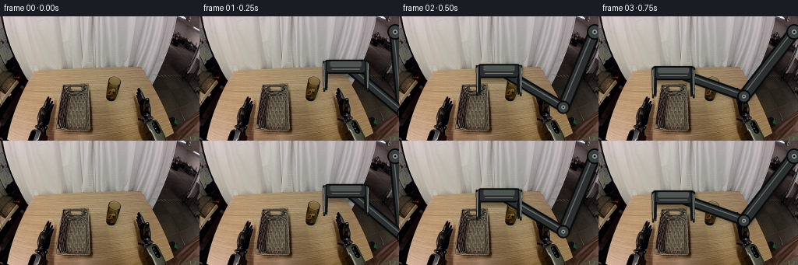

CODING AGENTS AS PIXEL WORLD MODELS
traex/DeepSeek-V4.1-Flash · common50_0033
点击播放 · 原生 RGB 像素
逐轮保存的候选
回放视频、检查图与代码变化。
每份候选均可单独播放。实际图片检查记录在下方工具轨迹中。
候选 01播放与检查图
点击播放 · 原生 RGB 像素


展开代码变化
--- 上一保存版本
+++ 本次保存版本
@@ -0,0 +1,451 @@
+from __future__ import annotations
+
+import math
+from pathlib import Path
+
+import cv2
+import numpy as np
+from PIL import Image, ImageDraw, ImageFilter
+
+import artifact_io
+
+
+ROOT = Path(__file__).resolve().parent
+WIDTH = 256
+HEIGHT = 160
+FRAME_COUNT = 20
+
+# The target is the large translucent tumbler in the center-left of the scene.
+GLASS_POLYGON = np.array(
+ [
+ (72, 86),
+ (111, 86),
+ (114, 92),
+ (116, 105),
+ (118, 130),
+ (119, 149),
+ (115, 153),
+ (99, 154),
+ (84, 153),
+ (77, 149),
+ (74, 137),
+ (73, 116),
+ (72, 98),
+ ],
+ dtype=np.int32,
+)
+
+GLASS_BOX = (68, 82, 123, 158)
+START_CENTER = (96.0, 120.0)
+DEST_CENTER = (166.0, 128.0)
+
+# The final front lip comes from the source basket, so its color and weave remain
+# faithful to the input image.
+BASKET_LIP_BOX = (141, 142, 199, 160)
+
+
+def smoothstep(value: float) -> float:
+ value = float(np.clip(value, 0.0, 1.0))
+ return value * value * (3.0 - 2.0 * value)
+
+
+def lerp_point(a: tuple[float, float], b: tuple[float, float], t: float) -> tuple[float, float]:
+ return (a[0] + (b[0] - a[0]) * t, a[1] + (b[1] - a[1]) * t)
+
+
+def make_glass_mask() -> np.ndarray:
+ mask = np.zeros((HEIGHT, WIDTH), dtype=np.uint8)
+ cv2.fillPoly(mask, [GLASS_POLYGON], 255)
+ # A one-pixel antialiased boundary avoids a hard cutout edge.
+ distance = cv2.distanceTransform(mask, cv2.DIST_L2, 5)
+ alpha = np.clip(distance / 1.55, 0.0, 1.0).astype(np.float32)
+ return alpha
+
+
+def make_background_plate(source: np.ndarray, alpha: np.ndarray) -> np.ndarray:
+ """Remove the glass and reconstruct the simple tabletop underneath it."""
+ hard = (alpha > 0.01).astype(np.uint8) * 255
+ hard = cv2.dilate(hard, np.ones((5, 5), np.uint8), iterations=1)
+ inpainted = cv2.inpaint(source, hard, 4, cv2.INPAINT_TELEA).astype(np.float32)
+
+ plate = source.astype(np.float32).copy()
+ yy, xx = np.where(hard > 0)
+ for y, x in zip(yy, xx):
+ if y < 87 or y > 154:
+ continue
+
+ # Interpolate the broad tabletop lighting between clean pixels on both
+ # sides, then add measured high-frequency texture from the right side.
+ left = np.median(source[y, 52:69].astype(np.float32), axis=0)
+ right = np.median(source[y, 121:135].astype(np.float32), axis=0)
+ t = np.clip((x - 70.0) / 51.0, 0.0, 1.0)
+ base = left * (1.0 - t) + right * t
+
+ sample_y = 92 + ((y * 7 + x * 3) % 54)
+ sample_x = 121 + ((x * 5 + y * 2) % 13)
+ local = source[sample_y, sample_x].astype(np.float32)
+ local_mean = np.median(source[max(0, sample_y - 2):sample_y + 3, 120:135].reshape(-1, 3), axis=0)
+ texture = (local - local_mean) * 0.72
+ plate[y, x] = base + texture
+
+ # Feather the replacement into the untouched source.
+ soft = cv2.GaussianBlur(hard.astype(np.float32) / 255.0, (7, 7), 2.0)
+ soft = np.maximum(soft, alpha * 0.0)
+ blend = soft[..., None]
+ result = plate * blend + inpainted * (1.0 - blend)
+ return np.clip(result, 0, 255).astype(np.uint8)
+
+
+def alpha_composite(base: np.ndarray, overlay: Image.Image) -> np.ndarray:
+ rgba = np.asarray(overlay, dtype=np.float32)
+ alpha = rgba[..., 3:4] / 255.0
+ color = rgba[..., :3]
+ return np.clip(color * alpha + base.astype(np.float32) * (1.0 - alpha), 0, 255)
+
+
+def darken_composite(base: np.ndarray, overlay: Image.Image) -> np.ndarray:
+ rgba = np.asarray(overlay, dtype=np.float32)
+ alpha = rgba[..., 3:4] / 255.0
+ shadow = rgba[..., :3]
+ return np.clip(base.astype(np.float32) * (1.0 - alpha) + shadow * alpha, 0, 255)
+
+
+def scaled_point(point: tuple[float, float], scale: int) -> tuple[int, int]:
+ return (int(round(point[0] * scale)), int(round(point[1] * scale)))
+
+
+def solve_ik(
+ base: tuple[float, float],
+ target: tuple[float, float],
+ length_a: float,
+ length_b: float,
+) -> tuple[float, float]:
+ bx, by = base
+ tx, ty = target
+ dx, dy = tx - bx, ty - by
+ distance = max(1e-5, math.hypot(dx, dy))
+ reach = length_a + length_b - 0.5
+ if distance > reach:
+ scale = reach / distance
+ tx, ty = bx + dx * scale, by + dy * scale
+ dx, dy = tx - bx, ty - by
+ distance = reach
+
+ ux, uy = dx / distance, dy / distance
+ along = (length_a * length_a - length_b * length_b + distance * distance) / (2.0 * distance)
+ height = math.sqrt(max(0.0, length_a * length_a - along * along))
+ mid_x, mid_y = bx + ux * along, by + uy * along
+ # Negative branch bends the elbow down and to the right, keeping it clear
+ # of the glass and producing a natural right-arm reach.
+ elbow = (mid_x + uy * height, mid_y - ux * height)
+ return elbow
+
+
+def draw_link(
+ draw: ImageDraw.ImageDraw,
+ p0: tuple[float, float],
+ p1: tuple[float, float],
+ width0: float,
+ width1: float,
+ scale: int,
+) -> None:
+ x0, y0 = scaled_point(p0, scale)
+ x1, y1 = scaled_point(p1, scale)
+ w0, w1 = int(width0 * scale), int(width1 * scale)
+ draw.line((x0, y0, x1, y1), fill=(9, 11, 12, 255), width=max(w0, w1) + 5 * scale)
+ draw.line((x0, y0, x1, y1), fill=(43, 47, 48, 255), width=max(w0, w1))
+
+ vx, vy = x1 - x0, y1 - y0
+ length = max(1.0, math.hypot(vx, vy))
+ nx, ny = -vy / length, vx / length
+ offset = max(1.0, 1.8 * scale)
+ hx0, hy0 = x0 + nx * offset, y0 + ny * offset
+ hx1, hy1 = x1 + nx * offset, y1 + ny * offset
+ draw.line(
+ (hx0, hy0, hx1, hy1),
+ fill=(99, 107, 106, 230),
+ width=max(1, int(1.7 * scale)),
+ )
+ draw.ellipse(
+ (x0 - w0 // 2, y0 - w0 // 2, x0 + w0 // 2, y0 + w0 // 2),
+ fill=(38, 42, 43, 255),
+ )
+ draw.ellipse(
+ (x1 - w1 // 2, y1 - w1 // 2, x1 + w1 // 2, y1 + w1 // 2),
+ fill=(38, 42, 43, 255),
+ )
+
+
+def draw_joint(
+ draw: ImageDraw.ImageDraw,
+ point: tuple[float, float],
+ radius: float,
+ scale: int,
+) -> None:
+ x, y = scaled_point(point, scale)
+ r = int(radius * scale)
+ draw.ellipse((x - r - 2 * scale, y - r - 2 * scale, x + r + 2 * scale, y + r + 2 * scale), fill=(9, 10, 11, 255))
+ draw.ellipse((x - r, y - r, x + r, y + r), fill=(57, 62, 63, 255))
+ inner = max(2, int(r * 0.40))
+ draw.ellipse((x - inner, y - inner, x + inner, y + inner), fill=(139, 146, 143, 255))
+ tiny = max(1, int(r * 0.18))
+ draw.ellipse((x - tiny, y - tiny, x + tiny, y + tiny), fill=(24, 27, 27, 255))
+
+
+def draw_fingers(
+ draw: ImageDraw.ImageDraw,
+ wrist: tuple[float, float],
+ opening: float,
+ scale: int,
+) -> None:
+ cx, wy = wrist
+ finger_offset = 22.0 + 5.0 * opening
+ top = wy - 5.0
+ tip = wy + 34.0
+ half_width = 2.5
+
+ for side in (-1.0, 1.0):
+ outer = cx + side * (finger_offset + half_width)
+ inner = cx + side * (finger_offset - half_width)
+ inner_tip = inner + side * 1.3
+ points = [
+ scaled_point((outer, top), scale),
+ scaled_point((inner, top), scale),
+ scaled_point((inner_tip, tip - 5.0), scale),
+ scaled_point((inner_tip + side * 1.4, tip), scale),
+ scaled_point((outer - side * 0.7, tip), scale),
+ ]
+ draw.polygon(points, fill=(58, 62, 61, 255), outline=(9, 10, 11, 255), width=max(1, scale))
+
+ # Bright machined edge and dark rubber contact pad.
+ edge_x = outer - side * 1.0
+ draw.line(
+ (
+ scaled_point((edge_x, top + 3.0), scale)
+ + scaled_point((edge_x - side * 0.5, tip - 5.0), scale)
+ ),
+ fill=(153, 160, 155, 255),
+ width=max(1, int(1.2 * scale)),
+ )
+ pad_outer = inner + side * 0.7
+ pad_inner = inner - side * 1.3
+ draw.polygon(
+ [
+ scaled_point((pad_outer, wy + 8.0), scale),
+ scaled_point((pad_inner, wy + 8.0), scale),
+ scaled_point((pad_inner + side * 0.8, tip - 2.0), scale),
+ scaled_point((pad_outer + side * 0.3, tip - 2.0), scale),
+ ],
+ fill=(19, 21, 20, 255),
+ )
+
+
+def make_arm_layers(
+ wrist: tuple[float, float],
+ opening: float,
+ scale: int = 4,
+) -> tuple[Image.Image, Image.Image, Image.Image]:
+ size = (WIDTH * scale, HEIGHT * scale)
+ arm = Image.new("RGBA", size, (0, 0, 0, 0))
+ fingers = Image.new("RGBA", size, (0, 0, 0, 0))
+ shadow = Image.new("RGBA", size, (0, 0, 0, 0))
+ arm_draw = ImageDraw.Draw(arm)
+ finger_draw = ImageDraw.Draw(fingers)
+ shadow_draw = ImageDraw.Draw(shadow)
+
+ shoulder = (251.0, 20.0)
+ elbow = solve_ik(shoulder, wrist, 105.0, 96.0)
+
+ # A soft cast shadow keeps the moving arm grounded to the workspace.
+ for p0, p1, width in ((shoulder, elbow, 12), (elbow, wrist, 10)):
+ sx0, sy0 = scaled_point((p0[0] + 2.5, p0[1] + 3.0), scale)
+ sx1, sy1 = scaled_point((p1[0] + 2.5, p1[1] + 3.0), scale)
+ shadow_draw.line((sx0, sy0, sx1, sy1), fill=(5, 3, 2, 100), width=width * scale)
+ wx, wy = scaled_point((wrist[0] + 2.5, wrist[1] + 3.0), scale)
+ shadow_draw.rounded_rectangle(
+ (wx - 28 * scale, wy - 8 * scale, wx + 28 * scale, wy + 13 * scale),
+ radius=4 * scale,
+ fill=(5, 3, 2, 95),
+ )
+ shadow = shadow.filter(ImageFilter.GaussianBlur(2.1 * scale))
+
+ draw_link(arm_draw, shoulder, elbow, 12.0, 9.0, scale)
+ draw_link(arm_draw, elbow, wrist, 9.0, 7.0, scale)
+ draw_joint(arm_draw, shoulder, 8.0, scale)
+ draw_joint(arm_draw, elbow, 6.5, scale)
+ draw_joint(arm_draw, wrist, 5.2, scale)
+
+ # Palm and wrist housing.
+ px, py = scaled_point(wrist, scale)
+ arm_draw.rounded_rectangle(
+ (px - 27 * scale, py - 7 * scale, px + 27 * scale, py + 11 * scale),
+ radius=3.5 * scale,
+ fill=(42, 46, 46, 255),
+ outline=(8, 9, 9, 255),
+ width=2 * scale,
+ )
+ arm_draw.rounded_rectangle(
+ (px - 20 * scale, py - 5 * scale, px + 20 * scale, py + 2 * scale),
+ radius=2 * scale,
+ fill=(78, 84, 82, 255),
+ )
+ arm_draw.line(
+ (px - 18 * scale, py + 5 * scale, px + 18 * scale, py + 5 * scale),
+ fill=(132, 139, 134, 220),
+ width=max(1, scale),
+ )
+
+ # The fingers are also supplied as a separate layer so the glass can sit
+ # between the palm and the near jaw while preserving a convincing grip.
+ draw_fingers(arm_draw, wrist, opening, scale)
+ draw_fingers(finger_draw, wrist, opening, scale)
+ native_size = (WIDTH, HEIGHT)
+ arm = arm.resize(native_size, Image.Resampling.LANCZOS)
+ fingers = fingers.resize(native_size, Image.Resampling.LANCZOS)
+ shadow = shadow.resize(native_size, Image.Resampling.LANCZOS)
+ return arm, fingers, shadow
+
+
+def place_glass(
+ base: np.ndarray,
+ source_crop: np.ndarray,
+ alpha_crop: np.ndarray,
+ offset: tuple[float, float],
+ angle: float,
+) -> np.ndarray:
+ x0, y0, _, _ = GLASS_BOX
+ h, w = alpha_crop.shape
+ cx, cy = (w - 1) * 0.5, (h - 1) * 0.5
+ radians = math.radians(angle)
+ cosine, sine = math.cos(radians), math.sin(radians)
+ dx, dy = offset
+ matrix = np.array(
+ [
+ [cosine, -sine, x0 + dx + cx - cosine * cx + sine * cy],
+ [sine, cosine, y0 + dy + cy - sine * cx - cosine * cy],
+ ],
+ dtype=np.float32,
+ )
+ warped = cv2.warpAffine(
+ source_crop,
+ matrix,
+ (WIDTH, HEIGHT),
+ flags=cv2.INTER_LINEAR,
+ borderMode=cv2.BORDER_CONSTANT,
+ borderValue=(0, 0, 0),
+ )
+ warped_alpha = cv2.warpAffine(
+ alpha_crop,
+ matrix,
+ (WIDTH, HEIGHT),
+ flags=cv2.INTER_LINEAR,
+ borderMode=cv2.BORDER_CONSTANT,
+ borderValue=0,
+ )
+
+ shadow = Image.new("RGBA", (WIDTH, HEIGHT), (0, 0, 0, 0))
+ shadow_draw = ImageDraw.Draw(shadow)
+ shadow_cx = START_CENTER[0] + dx
+ shadow_cy = START_CENTER[1] + dy + 31.0
+ shadow_draw.ellipse(
+ (shadow_cx - 27, shadow_cy - 5, shadow_cx + 27, shadow_cy + 5),
+ fill=(8, 4, 2, 62),
+ )
+ shadow = shadow.filter(ImageFilter.GaussianBlur(3.2))
+ base = darken_composite(base, shadow)
+
+ a = warped_alpha[..., None]
+ return np.clip(warped.astype(np.float32) * a + base.astype(np.float32) * (1.0 - a), 0, 255)
+
+
+def add_basket_lip(base: np.ndarray, source: np.ndarray) -> np.ndarray:
+ x0, y0, x1, y1 = BASKET_LIP_BOX
+ mask = np.zeros((HEIGHT, WIDTH), dtype=np.float32)
+ mask[y0:y1, x0:x1] = 1.0
+ feather = np.zeros_like(mask)
+ for y in range(y0, y1):
+ feather[y, x0:x1] = np.clip((y - (y0 + 3.0)) / 5.0, 0.0, 1.0)
+ feather = cv2.GaussianBlur(feather, (5, 5), 1.2)[..., None]
+ return np.clip(source.astype(np.float32) * feather + base.astype(np.float32) * (1.0 - feather), 0, 255)
+
+
+def state_for_frame(index: int) -> tuple[tuple[float, float], float, tuple[float, float], float]:
+ start_wrist = (START_CENTER[0], 86.0 - 15.0)
+ retracted_wrist = (220.0, 60.0)
+
+ if index <= 4:
+ t = smoothstep(index / 3.0)
+ wrist = lerp_point(retracted_wrist, start_wrist, t)
+ opening = 1.0 if index < 3 else max(0.0, 0.62 - 0.62 * smoothstep((index - 3) / 1.0))
+ return wrist, opening, (0.0, 0.0), 0.0
+
+ if index <= 14:
+ t = smoothstep((index - 5) / 9.0)
+ dx = (DEST_CENTER[0] - START_CENTER[0]) * t
+ dy = -20.0 * math.sin(math.pi * t) + (DEST_CENTER[1] - START_CENTER[1]) * t
+ angle = -1.2 * math.sin(math.pi * t)
+ wrist = (START_CENTER[0] + dx, 86.0 - 15.0 + dy)
+ return wrist, 0.0, (dx, dy), angle
+
+ dest_offset = (DEST_CENTER[0] - START_CENTER[0], DEST_CENTER[1] - START_CENTER[1])
+ dest_wrist = (DEST_CENTER[0], 86.0 - 15.0 + dest_offset[1])
+ if index <= 16:
+ opening = smoothstep((index - 14) / 2.0)
+ return (dest_wrist[0], dest_wrist[1] - 2.0 * opening), opening, dest_offset, 0.0
+
+ t = smoothstep((index - 17) / 2.0)
+ wrist = lerp_point((dest_wrist[0], dest_wrist[1] - 3.0), retracted_wrist, t)
+ return wrist, 1.0, dest_offset, 0.0
+
+
+def generate() -> np.ndarray:
+ source = np.asarray(Image.open(ROOT / "first_frame.png").convert("RGB"), dtype=np.uint8)
+ if source.shape != (HEIGHT, WIDTH, 3):
+ raise ValueError(f"Unexpected first frame shape: {source.shape}")
+
+ glass_alpha = make_glass_mask()
+ background = make_background_plate(source, glass_alpha)
+ x0, y0, x1, y1 = GLASS_BOX
+ source_crop = source[y0:y1, x0:x1].copy()
+ alpha_crop = glass_alpha[y0:y1, x0:x1].copy()
+
+ frames = np.empty((FRAME_COUNT, HEIGHT, WIDTH, 3), dtype=np.uint8)
+ frames[0] = source
+
+ for index in range(1, FRAME_COUNT):
+ wrist, opening, glass_offset, angle = state_for_frame(index)
+ arm, fingers, shadow = make_arm_layers(wrist, opening)
+
+ # Through first contact the original pixels are retained. Once the glass
+ # lifts, the cleaned plate replaces its original footprint.
+ base = source.astype(np.float32) if index <= 4 else background.astype(np.float32)
+ base = darken_composite(base, shadow)
+ base = alpha_composite(base, arm)
+
+ if index >= 5:
+ base = place_glass(base, source_crop, alpha_crop, glass_offset, angle)
+
+ if index >= 14:
+ base = add_basket_lip(base, source)
+
+ base = alpha_composite(base, fingers)
+ frames[index] = np.clip(base, 0, 255).astype(np.uint8)
+
+ return frames
+
+
+def main() -> None:
+ frames = generate()
+ assert frames.shape == (FRAME_COUNT, HEIGHT, WIDTH, 3)
+ assert frames.dtype == np.uint8
+ artifact_io.save(frames, ROOT)
+
+ source = np.asarray(Image.open(ROOT / "first_frame.png").convert("RGB"), dtype=np.uint8)
+ assert np.array_equal(frames[0], source)
+ changed = np.any(frames != source[None, ...], axis=-1)
+ print(f"saved {len(frames)} frames; changed pixels per frame:")
+ print(" ".join(str(int(count)) for count in changed.sum(axis=(1, 2))))
+
+
+if __name__ == "__main__":
+ main()
可观测工具轨迹
实际执行的命令与返回图片。
命令 1exit 0
/bin/bash -c "pwd && rg --files -g 'prompt.txt' -g 'GENERATION_RULES.md' -g 'first_frame.png' -g '"'!**/.git/**'"'"
命令 2exit 0
/bin/bash -c 'git status --short'
命令 3exit 0
/bin/bash -c 'cat prompt.txt'
命令 4exit 0
/bin/bash -c 'file first_frame.png && identify first_frame.png 2>/dev/null || true'
命令 5exit 0
/bin/bash -c 'cat GENERATION_RULES.md'
命令 6exit 0
/bin/bash -c "find . -maxdepth 2 -type f -printf '%p %s bytes\\n' | sort"
命令 7exit 0
/bin/bash -c "python - <<'PY'
from PIL import Image
import numpy as np
im=Image.open('first_frame.png').convert('RGB')
a=np.asarray(im)
print('size', im.size, 'mode', im.mode, 'dtype', a.dtype, 'shape', a.shape)
print('min/max/mean/std', a.min(), a.max(), a.mean(axis=(0,1)), a.std(axis=(0,1)))
# unique and dominant colors
u,c=np.unique(a.reshape(-1,3),axis=0,return_counts=True)
idx=np.argsort(c)[-20:][::-1]
for i in idx: print(tuple(u[i]), int(c[i]))
PY"命令 8exit 0
/bin/bash -c "if [ -f task_spec.json ]; then cat task_spec.json; else echo 'task_spec.json missing'; fi"
命令 9exit 0
/bin/bash -c "sed -n '1,240p' artifact_io.py"
命令 10exit 0
/bin/bash -c "python - <<'PY'
from PIL import Image
import numpy as np
from collections import Counter
im=np.array(Image.open('first_frame.png').convert('RGB'))
# HSV via colorsys vector-ish PIL conversion
hsv=np.array(Image.fromarray(im).convert('HSV'))
H,S,V=hsv[:,:,0].astype(int),hsv[:,:,1].astype(int),hsv[:,:,2].astype(int)
for name,m in {
'dark':V<45,
'shadow':V<80,
'green':(H>25)&(H<100)&(S>45)&(V>20),
'olive':(H>20)&(H<60)&(S>35)&(V>25)&(V<170),
'brown':(H<35)&(S>25)&(V<150),
'gray':(S<25)&(V>70),
'bright':V>180,
}.items():
ys,xs=np.where(m)
if len(xs): print(f'{name:7s} n={len(xs):5d} bbox=({xs.min()},{ys.min()})-({xs.max()},{ys.max()}) centroid=({xs.mean():.1f},{ys.mean():.1f})')
# green components coarse
from scipy import ndimage
m=(H>25)&(H<100)&(S>45)&(V>20)
lab,n=ndimage.label(m)
for i in range(1,n+1):
ys,xs=np.where(lab==i)
if len(xs)>=20: print('greencomp',i,len(xs),(xs.min(),ys.min(),xs.max(),ys.max()),tuple(np.median(im[ys,xs],axis=0).astype(int)))
PY"命令 11exit 0
/bin/bash -c "python - <<'PY' import importlib.util for m in ['cv2','scipy','imageio','matplotlib','skimage']: print(m, bool(importlib.util.find_spec(m))) PY"
命令 12exit 0
/bin/bash -c "python - <<'PY'
from PIL import Image
import numpy as np
im=np.array(Image.open('first_frame.png').convert('RGB')).astype(float)
# 64x40 blocks average
h,w=im.shape[:2]; sy,sx=4,4
for y in range(0,h,sy):
line=''
for x in range(0,w,sx):
b=im[y:y+sy,x:x+sx].mean((0,1)); r,g,bl=b
# colored symbols if saturated
mx,mn=max(b),min(b); sat=mx-mn
if sat>18:
if g>r*1.05 and g>bl*1.1: ch='G'
elif r>g*1.15 and g>bl*1.05: ch='B' if r<150 else 'O'
elif bl>r*1.1: ch='C'
else: ch='g'
else:
v=b.mean(); ch='@%#*+=-:. '[min(9,int(v/256*10))]
line+=ch
print(line)
PY"命令 13exit 0
/bin/bash -c "python - <<'PY'
import cv2, numpy as np
from PIL import Image
from scipy import ndimage
im=cv2.imread('first_frame.png')
lab=cv2.cvtColor(im,cv2.COLOR_BGR2LAB)
# kmeans color clusters
Z=lab.reshape(-1,3).astype(np.float32)
crit=(cv2.TERM_CRITERIA_EPS+cv2.TERM_CRITERIA_MAX_ITER,50,0.2)
for k in [8,12,16]:
_,labels,centers=cv2.kmeans(Z,k,None,crit,10,cv2.KMEANS_PP_CENTERS)
labels=labels.reshape(160,256)
centers_rgb=cv2.cvtColor(centers.reshape(-1,1,3).astype(np.uint8),cv2.COLOR_LAB2RGB).reshape(-1,3)
print('\\nK=',k)
for i,c in enumerate(centers_rgb):
m=labels==i; ys,xs=np.where(m)
print(f'{i:2d} rgb={tuple(c.astype(int))} n={len(xs):5d} bbox={xs.min():3d},{ys.min():3d}-{xs.max():3d},{ys.max():3d} cent={xs.mean():.0f},{ys.mean():.0f}')
PY"命令 14exit 0
/bin/bash -c "python - <<'PY'
from PIL import Image, ImageEnhance
im=Image.open('first_frame.png')
im.resize((1024,640),Image.Resampling.NEAREST).save('zoom.png')
# crops quadrants
for name,box in {'left':(0,0,128,160),'right':(128,0,256,160),'mid':(64,32,224,160),'glass':(75,60,180,145)}.items():
im.crop(box).resize(((box[2]-box[0])*4,(box[3]-box[1])*4),Image.Resampling.NEAREST).save('crop_'+name+'.png')
PY"命令 15exit 0
/bin/bash -c "python - <<'PY'
import cv2, numpy as np
im=cv2.imread('first_frame.png')
g=cv2.cvtColor(im,cv2.COLOR_BGR2GRAY)
# suppress subtle texture, retain strong outlines
sm=cv2.GaussianBlur(g,(5,5),1.0)
e=cv2.Canny(sm,30,80)
# 2x2 blocks max
for y in range(0,160,2):
line=''
for x in range(0,256,2):
b=e[y:y+2,x:x+2]
v=b.max()
line += '##' if v else ('..' if g[y:y+2,x:x+2].mean()>90 else ' ')
print(line)
PY"命令 16exit 0
/bin/bash -c "python - <<'PY'
import cv2, numpy as np
im=cv2.imread('first_frame.png')[:,:,::-1]
# crop glass coarse via olive mask and connected component after close
hsv=cv2.cvtColor(im,cv2.COLOR_RGB2HSV)
H,S,V=hsv[:,:,0]*2,hsv[:,:,1],hsv[:,:,2]
# inspect pixels grid center coordinates colors
for y in [60,70,80,90,100,110,120,130,140,150]:
print('y',y)
for x in [60,80,100,120,140,160,180,200,220,240]:
print(f'{x}:{tuple(im[y,x])}',end=' ')
print()
PY"命令 17exit 0
/bin/bash -c "python - <<'PY'
import cv2, numpy as np
im=cv2.imread('first_frame.png')
hsv=cv2.cvtColor(im,cv2.COLOR_BGR2HSV)
for name,mask in {
'very_dark': cv2.inRange(hsv,(0,0,0),(180,255,55)),
'mid_dark': cv2.inRange(hsv,(0,0,55),(180,255,110)),
'light': cv2.inRange(hsv,(0,0,111),(180,255,255)),
'warm': cv2.inRange(hsv,(5,25,25),(45,255,220)),
'greenish': cv2.inRange(hsv,(20,20,20),(100,255,200)),
'saturated': cv2.inRange(hsv,(0,45,0),(180,255,255)),
'olive_glass': cv2.inRange(hsv,(25,20,35),(95,170,170)),
}.items():
# open/close
m=cv2.morphologyEx(mask,cv2.MORPH_OPEN,np.ones((3,3),np.uint8))
cs,_=cv2.findContours(m,cv2.RETR_EXTERNAL,cv2.CHAIN_APPROX_SIMPLE)
cs=sorted(cs,key=cv2.contourArea,reverse=True)[:15]
print('\\n',name,'pixels',int(mask.sum()/255))
for c in cs:
x,y,w,h=cv2.boundingRect(c); a=cv2.contourArea(c)
if a>=20: print(f' bbox={x:3d},{y:3d} {w:3d}x{h:3d} area={a:.0f}')
PY"命令 18exit 0
/bin/bash -c "python - <<'PY'
import cv2, numpy as np
im=cv2.imread('first_frame.png')
# HSV and RGB map with 2px blocks using most representative color category
hsv=cv2.cvtColor(im,cv2.COLOR_BGR2HSV)
for y in range(0,160,4):
line=''
for x in range(0,256,4):
h,s,v=hsv[y:y+4,x:x+4].reshape(-1,3).mean(0)
b,g,r=im[y:y+4,x:x+4].reshape(-1,3).mean(0)
if v<35: c='@'
elif v<60: c='#'
elif v<90: c='*'
elif s<18: c='.' if v<140 else ':'
elif h<18: c='R'
elif h<35: c='O'
elif h<60: c='Y'
elif h<95: c='G'
elif h<140: c='C'
else: c='B'
line+=c
print(f'{y:03d} {line}')
PY"命令 19exit 0
/bin/bash -c "python - <<'PY'
import cv2,numpy as np
im=cv2.imread('first_frame.png'); hsv=cv2.cvtColor(im,cv2.COLOR_BGR2HSV)
# output selected masks 2x2 blocks
masks={
'V<55':hsv[:,:,2]<55,
'V<90':hsv[:,:,2]<90,
'olivegray':(hsv[:,:,0]>=25)&(hsv[:,:,0]<95)&(hsv[:,:,1]>=20)&(hsv[:,:,1]<120)&(hsv[:,:,2]>=35)&(hsv[:,:,2]<160),
'gloss':(hsv[:,:,2]>=180),
}
for name,m in masks.items():
print('\\n===',name,'===')
for y in range(0,160,4):
line=''
for x in range(0,256,4):
c=m[y:y+4,x:x+4].mean()
line += 'â' if c>.6 else 'â' if c>.25 else 'â' if c>.08 else '·' if c>0 else ' '
print(line.rstrip())
PY"命令 20exit 0
/bin/bash -c "python - <<'PY'
import cv2, numpy as np
im=cv2.imread('first_frame.png')
g=cv2.cvtColor(im,cv2.COLOR_BGR2GRAY)
g=cv2.GaussianBlur(g,(5,5),1)
e=cv2.Canny(g,40,110)
lines=cv2.HoughLinesP(e,1,np.pi/180,threshold=20,minLineLength=12,maxLineGap=4)
arr=[]
for l in lines[:,0]:
x1,y1,x2,y2=map(int,l); length=((x2-x1)**2+(y2-y1)**2)**.5; ang=np.degrees(np.arctan2(y2-y1,x2-x1))
arr.append((length,ang,x1,y1,x2,y2))
for t in sorted(arr,reverse=True)[:100]: print(f'len={t[0]:5.1f} ang={t[1]:6.1f} ({t[2]:3d},{t[3]:3d})-({t[4]:3d},{t[5]:3d})')
PY"命令 21exit 0
/bin/bash -c "python - <<'PY'
import cv2,numpy as np
im=cv2.imread('first_frame.png')
# contour polygons for dark large regions
for thr in [55,75,95]:
m=(cv2.cvtColor(im,cv2.COLOR_BGR2HSV)[:,:,2]<thr).astype(np.uint8)*255
m=cv2.morphologyEx(m,cv2.MORPH_CLOSE,np.ones((5,5),np.uint8))
cs,_=cv2.findContours(m,cv2.RETR_EXTERNAL,cv2.CHAIN_APPROX_SIMPLE)
print('\\nTHR',thr)
for c in sorted(cs,key=cv2.contourArea,reverse=True)[:10]:
a=cv2.contourArea(c); x,y,w,h=cv2.boundingRect(c)
if a>100:
approx=cv2.approxPolyDP(c,3,True).reshape(-1,2)
print('bbox',x,y,w,h,'area',a,'poly',approx.tolist())
PY"命令 22exit 0
/bin/bash -c "python - <<'PY'
from PIL import Image
import numpy as np
im=np.array(Image.open('first_frame.png')).astype(np.int16)
# create downsample bilinear via box
for y in range(0,160,4):
print(f'{y:03d}',end=' ')
for x in range(0,256,4):
b=im[y:y+4,x:x+4].mean((0,1)).astype(int)
# print nearest xterm approx using hex maybe dominant
print('%02x%02x%02x'%tuple(b),end=' ')
print()
PY"命令 23exit 0
/bin/bash -c "python - <<'PY'
import cv2, numpy as np
im=cv2.imread('first_frame.png')[:,:,::-1].astype(float)
g=im.mean(2)
chars=' .:-=+*#%@'
for box in [(60,60,220,160),(0,60,140,160),(120,50,256,160),(60,80,130,155)]:
x0,y0,x1,y1=box
print('\\nBOX',box)
for y in range(y0,y1,2):
line=''
for x in range(x0,x1,2):
v=g[y:y+2,x:x+2].mean()
# gamma contrast on local range
line+=chars[min(9,int(v/256*10))]
print(line)
PY"命令 24exit 0
/bin/bash -c "python - <<'PY'
import cv2,numpy as np
im=cv2.imread('first_frame.png')
# use texton descriptor and SLIC superpixels, report likely object shapes
slic=cv2.ximgproc.createSuperpixelSLIC(im, algorithm=cv2.ximgproc.SLICO, region_size=10, ruler=12.0) if hasattr(cv2,'ximgproc') else None
print('ximgproc',slic is not None)
if slic:
slic.iterate(10); n=slic.getNumberOfSuperpixels(); lab=slic.getLabels()
for i in range(n):
ys,xs=np.where(lab==i)
if len(xs)<30: continue
col=np.median(im[ys,xs],axis=0)[::-1].astype(int); x,y,w,h=cv2.boundingRect(np.c_[xs,ys].astype(np.int32))
print(f'{i:3d} n={len(xs):3d} bbox={x:3d},{y:3d},{w:3d},{h:3d} rgb={tuple(col)}')
PY"命令 25exit 0
/bin/bash -c "python - <<'PY'
import cv2,numpy as np
from scipy import ndimage
im=cv2.imread('first_frame.png')[:,:,::-1]
g=im.mean(2)
# print RGB and grayscale values at full resolution for region with suspicious glass object x80-130,y80-150 as compact character map
# classify by quantized rgb nearest palette names
pal={'black':(10,8,8),'darkbrown':(45,35,28),'brown':(120,92,60),'tan':(180,150,110),'gray':(100,95,90),'light':(170,165,160),'white':(205,200,195),'olive':(105,98,65),'green':(60,75,40)}
for y in range(78,152,2):
line=''
for x in range(72,138,2):
b=im[y:y+2,x:x+2].mean((0,1))
k=min(pal,key=lambda k:sum((b[i]-pal[k][i])**2 for i in range(3)))
ch={'black':'@','darkbrown':'#','brown':'B','tan':'T','gray':'g','light':'L','white':'W','olive':'o','green':'G'}[k]
line+=ch
print(f'{y:03d} {line}')
PY"命令 26exit 0
/bin/bash -c "python - <<'PY'
import cv2,numpy as np
im=cv2.imread('first_frame.png')
hsv=cv2.cvtColor(im,cv2.COLOR_BGR2HSV)
# print hsv / rgb at likely glass interior
for y in [90,100,110,120,130,140]:
print('y',y)
for x in range(80,141,10):
b,g,r=im[y,x]; h,s,v=hsv[y,x]
print(f'x{x}: rgb({r},{g},{b}) hsv({h},{s},{v})',end=' | ')
print()
PY"命令 27exit 0
/bin/bash -c "python - <<'PY'
import cv2,numpy as np
im=cv2.imread('first_frame.png')
hsv=cv2.cvtColor(im,cv2.COLOR_BGR2HSV)
# print saturation-value compact map for ROI
for y in range(60,160,2):
line=''
for x in range(0,256,2):
h,s,v=hsv[y,x]
if v<40: c='@'
elif v<70: c='#'
elif v<100: c='*'
elif v<140: c='+'
elif v<180: c='-'
else: c='.'
line+=c
print(line)
PY"命令 28exit 0
/bin/bash -c "python - <<'PY'
import cv2,numpy as np
im=cv2.imread('first_frame.png')
g=cv2.cvtColor(im,cv2.COLOR_BGR2GRAY).astype(float)
gx=cv2.Sobel(g,cv2.CV_64F,1,0,ksize=3); gy=cv2.Sobel(g,cv2.CV_64F,0,1,ksize=3)
mag=np.sqrt(gx*gx+gy*gy)
chars=' .:-=+*#%@'
print('gradient energy 8px blocks')
for y in range(0,160,8):
line=''
for x in range(0,256,8):
v=np.mean(mag[y:y+8,x:x+8])
line+=chars[min(9,int(v/120*10))]
print(f'{y:03d} {line}')
print('\\ncolor std 8px')
for y in range(0,160,8):
line=''
for x in range(0,256,8):
v=np.mean(im[y:y+8,x:x+8].std(axis=(0,1)))
line+=chars[min(9,int(v/50*10))]
print(f'{y:03d} {line}')
PY"命令 29exit 0
/bin/bash -c "python - <<'PY'
from PIL import Image
import numpy as np
im=np.array(Image.open('first_frame.png'))
# make 16x10 tiles enlarged using nearest to inspect at char image maybe use sixel unavailable
# Save enhanced contrast images with CLAHE and edge overlay, plus masks
import cv2
lab=cv2.cvtColor(im,cv2.COLOR_RGB2LAB); l,a,b=cv2.split(lab); l=cv2.createCLAHE(2,(8,8)).apply(l); enh=cv2.cvtColor(cv2.merge([l,a,b]),cv2.COLOR_LAB2RGB)
Image.fromarray(enh).resize((1024,640),Image.Resampling.NEAREST).save('contrast_zoom.png')
# gradient magnitude
g=cv2.cvtColor(im,cv2.COLOR_RGB2GRAY); gx=cv2.Sobel(g,cv2.CV_32F,1,0); gy=cv2.Sobel(g,cv2.CV_32F,0,1); mag=np.sqrt(gx*gx+gy*gy); mag=np.clip(mag/mag.max()*255,0,255).astype('uint8')
Image.fromarray(mag).resize((1024,640),Image.Resampling.NEAREST).save('edges_zoom.png')
PY"命令 30exit 0
/bin/bash -c "python - <<'PY'
import cv2,numpy as np
im=cv2.imread('first_frame.png')
# use kmeans segment centers and create each mask summary as ascii at 4x4 with label char
Z=im.reshape(-1,3).astype(np.float32)
crit=(cv2.TERM_CRITERIA_EPS+cv2.TERM_CRITERIA_MAX_ITER,100,0.1)
_,lbl,c=cv2.kmeans(Z,24,None,crit,10,cv2.KMEANS_PP_CENTERS)
lbl=lbl.reshape(160,256); c=c.astype(int)
# sort center by brightness
order=np.argsort(c.sum(1)); remap=np.zeros(24,int)
chars='0123456789abcdefghijklmn'
for j,i in enumerate(order): remap[i]=j
lbl=remap[lbl]
print('centers')
for j,i in enumerate(order): print(chars[j], tuple(c[i][::-1]))
for y in range(0,160,4):
line=''
for x in range(0,256,4):
vals,cnt=np.unique(lbl[y:y+4,x:x+4],return_counts=True)
line+=chars[vals[cnt.argmax()]]
print(f'{y:03d} {line}')
PY"命令 31exit 0
/bin/bash -c "python - <<'PY'
import cv2,numpy as np
im=cv2.imread('first_frame.png')[:,:,::-1]
# list hue distributions and mean rgb in ROIs
rois={'a_75_115':(75,87,118,150),'b_136_154':(136,78,155,109),'c_140_175':(140,70,175,110),'d_90_200_110_160':(90,110,200,160),'e_175_230':(175,80,230,160),'f_160_220_60_120':(160,60,220,120),'g_0_70_60_160':(0,60,70,160)}
for n,(x0,y0,x1,y1) in rois.items():
b=im[y0:y1,x0:x1]; hsv=cv2.cvtColor(b,cv2.COLOR_RGB2HSV)
print('\\n',n,'shape',b.shape,'mean',b.mean((0,1)).round(1),'median',np.median(b.reshape(-1,3),0))
hist=np.bincount((hsv[:,:,0]*2).ravel(),minlength=180)
print('hue bins top',[(i,int(hist[i])) for i in np.argsort(hist)[-10:][::-1]])
print('sat mean',hsv[:,:,1].mean(),'val mean',hsv[:,:,2].mean())
# percentile rgb
for q in [5,25,50,75,95]: print(q,np.percentile(b.reshape(-1,3),q,axis=0).astype(int),end='; ')
print()
PY"命令 32exit 0
/bin/bash -c "python - <<'PY'
import cv2,numpy as np
im=cv2.imread('first_frame.png')
hsv=cv2.cvtColor(im,cv2.COLOR_BGR2HSV)
# color values at region x75..120 y85..150 exact map by hue, sat, val; one char per 2 pixels
for y in range(80,152,2):
line=''
for x in range(72,124,2):
h,s,v=hsv[y:y+2,x:x+2].reshape(-1,3).mean(0)
# encode val brightness, uppercase if sat > 70
chars=' .:-=+*#%@'
ch=chars[min(9,int(v/256*10))]
if s>80: ch=ch.upper() if ch"'!='"' ' else 's'
line+=ch
print(f'{y:03d} {line}')
PY"命令 33exit 0
/bin/bash -c "python - <<'PY'
import cv2,numpy as np
im=cv2.imread('first_frame.png')
g=cv2.cvtColor(im,cv2.COLOR_BGR2GRAY)
for thr in [100,120,140,160,180]:
m=(g<thr).astype(np.uint8)
m=m[84:153,70:122]
n,lab,stats,cents=cv2.connectedComponentsWithStats(m,8)
print('thr',thr)
for i in range(1,n):
x,y,w,h,a=stats[i]
if a>20: print(i,'bbox',x+70,y+84,w,h,'area',a)
PY"命令 34exit 0
/bin/bash -c "python - <<'PY'
import cv2,numpy as np
im=cv2.imread('first_frame.png')[:,:,::-1]
hsv=cv2.cvtColor(im,cv2.COLOR_RGB2HSV)
# define palette classes based on RGB exact-ish, output 2px blocks for x60..255,y50..160
# categories: black, deep brown, medium brown, tan, grey, light, olive/dark green, bright
for y in range(50,160,2):
line=''
for x in range(60,256,2):
p=im[y:y+2,x:x+2].reshape(-1,3).mean(0); h,s,v=hsv[y:y+2,x:x+2].reshape(-1,3).mean(0)
r,g,b=p
if v<28: ch='@'
elif v<52: ch='#'
elif v<82: ch='8'
elif v<110: ch='%'
elif s<20:
ch=':' if v<140 else '.' if v<180 else ' '
elif r>g*1.22 and g>b*1.15: # orange/brown
ch='B' if v<85 else 'b' if v<125 else 'T' if v<165 else 't'
elif g>=r*.94 and g>b*1.08:
ch='G'
elif b>r*1.02 and b>g*1.02:
ch='C'
else: ch='g'
line+=ch
print(f'{y:03d} {line}')
PY"命令 35exit 0
/bin/bash -c "python - <<'PY'
import cv2,numpy as np
im=cv2.imread('first_frame.png')[:,:,::-1]
g=im.mean(2)
for y in range(64,160,2):
m=g[y]<100
# intervals >=2 within x 40..190
xs=np.flatnonzero(m[40:190])+40
ints=[]
if len(xs):
starts=np.r_[0,np.flatnonzero(np.diff(xs)>1)+1]; ends=np.r_[starts[1:],len(xs)]
ints=[(int(xs[a]),int(xs[b-1])) for a,b in zip(starts,ends) if xs[b-1]-xs[a]>=1]
print(f'{y:03d}',ints)
PY"命令 36exit 0
/bin/bash -c "python - <<'PY'
import cv2,numpy as np
im=cv2.imread('first_frame.png')
hsv=cv2.cvtColor(im,cv2.COLOR_BGR2HSV)
for name, m in {
'greenish':((hsv[:,:,0]>35)&(hsv[:,:,0]<90)&(hsv[:,:,1]>40)&(hsv[:,:,2]>40)),
'saturated':((hsv[:,:,1]>100)&(hsv[:,:,2]>35)),
'midgray':((hsv[:,:,1]<40)&(hsv[:,:,2]>40)&(hsv[:,:,2]<130)),
'midbright':((hsv[:,:,2]>110)&(hsv[:,:,2]<180)),
}.items():
print('\\n',name)
for y in range(0,160,4):
line=''
for x in range(0,256,4):
v=m[y:y+4,x:x+4].mean(); line += 'âÂÂ' if v>.5 else 'âÂÂ' if v>.2 else 'âÂÂ' if v>.05 else ' '
print(line.rstrip())
PY"命令 37exit 0
/bin/bash -c "python - <<'PY'
import cv2,numpy as np
im=cv2.imread('first_frame.png')
# Use graph edges of high contrast and print Hough circles
g=cv2.cvtColor(im,cv2.COLOR_BGR2GRAY)
for p2 in [30,20,15,10]:
circles=cv2.HoughCircles(cv2.GaussianBlur(g,(5,5),1),cv2.HOUGH_GRADIENT,1.0,8,param1=80,param2=p2,minRadius=3,maxRadius=25)
print('p2',p2, None if circles is None else np.round(circles[0],1).tolist()[:30])
PY"命令 38exit 0
/bin/bash -c "python - <<'PY'
import cv2,numpy as np
im=cv2.imread('first_frame.png')[:,:,::-1].astype(float)
# column brightness values in ROI
for y in [78,82,86,90,94,98,102,106,110,114,118,122,126,130,134,138,142,146,150]:
print('\\ny',y)
for x in range(60,126,2):
v=im[y:y+1,x:x+2].mean()
print(f'{int(v):3d}',end=' ')
print()
PY"命令 39exit 0
/bin/bash -c "python - <<'PY'
import cv2,numpy as np
im=cv2.imread('first_frame.png')
hsv=cv2.cvtColor(im,cv2.COLOR_BGR2HSV)
# Make mask of glass based on shape polygon manually inferred, and inspect pixels outside/inside using stats
poly=np.array([[82,88],[110,88],[116,140],[112,148],[82,148],[76,137]],np.int32)
m=np.zeros((160,256),np.uint8); cv2.fillPoly(m,[poly],255)
# ring outside
ring=cv2.dilate(m,np.ones((15,15),np.uint8))-cv2.erode(m,np.ones((5,5),np.uint8))
for name,mask in [('inside',m>0),('outside',ring>0)]:
p=im[mask][:,::-1]; print(name,'n',len(p),'mean',p.mean(0),'median',np.median(p,0),'std',p.std(0))
print('sat',hsv[mask][:,1].mean(),'val',hsv[mask][:,2].mean(),'hue',hsv[mask][:,0].mean())
# color histogram inside to see green
p=im[mask][:,::-1]
print('unique representative')
u,c=np.unique(p,axis=0,return_counts=True); idx=np.argsort(c)[-20:][::-1]
for i in idx: print(tuple(u[i]),c[i])
PY"命令 40exit 0
/bin/bash -c "python - <<'PY'
import cv2,numpy as np
im=cv2.imread('first_frame.png')
# colorfulness metric in local cells: max-min
p=im[:,:,::-1].astype(int)
mx=p.max(2); mn=p.min(2); sat=mx-mn
# dominant green measure: G - (R+B)/2
gm=p[:,:,1]-(p[:,:,0]+p[:,:,2])/2
print('max gm',gm.max())
for y in range(0,160,4):
line=''
for x in range(0,256,4):
v=gm[y:y+4,x:x+4].mean()
if v>5: c='G'
elif v>0: c='g'
elif v>-5: c='.'
else: c=' '
line+=c
print(f'{y:03d} {line}')
PY"命令 41exit 0
/bin/bash -c "python - <<'PY'
import cv2,numpy as np
im=cv2.imread('first_frame.png')[:,:,::-1]
# find region with highest green excess at full res, report top locations and stats
gm=im[:,:,1].astype(int)-(im[:,:,0].astype(int)+im[:,:,2].astype(int))/2
print('gm>12 count',int((gm>12).sum()))
ys,xs=np.where(gm>12); print('bbox',xs.min(),ys.min(),xs.max(),ys.max())
# components
m=(gm>10).astype(np.uint8)
n,l,s,c=cv2.connectedComponentsWithStats(m,8)
for i in sorted(range(1,n),key=lambda i:s[i,4],reverse=True)[:20]:
x,y,w,h,a=s[i]
if a>8:
print(i,'bbox',x,y,w,h,'a',a,'max',gm[l==i].max(),'mean',gm[l==i].mean())
PY"命令 42exit 0
/bin/bash -c "python - <<'PY'
import cv2,numpy as np
im=cv2.imread('first_frame.png')[:,:,::-1]
# print grid RGB in 8px cells around right robot and basket
for y in range(64,160,8):
print('\\ny',y)
for x in range(120,256,8):
p=im[y:y+8,x:x+8].mean((0,1)).astype(int)
print(f'x{x}:{tuple(p)}',end=' ')
print()
PY"命令 43exit 0
/bin/bash -c "python - <<'PY'
import cv2,numpy as np
im=cv2.imread('first_frame.png')[:,:,::-1]
# show full-res RGB hex at selected points around proposed glass, including boundaries
for y in range(84,152,4):
print(f'{y:03d}',end=' ')
for x in range(72,128,4):
p=im[y:y+4,x:x+4].mean((0,1)).astype(int)
print('%02x%02x%02x'%tuple(p),end=' ')
print()
PY"命令 44exit 0
/bin/bash -c "python - <<'PY'
import cv2,numpy as np
im=cv2.imread('first_frame.png')[:,:,::-1].astype(float)
# use gradient of RGB along each row/col in region to find object bounds by changes
for y in [84,86,88,90,120,144,146,148]:
d=np.linalg.norm(np.diff(im[y],axis=0),axis=1)
idx=np.where(d>20)[0]
print('row',y,[(int(i),int(i+1),round(float(d[i]),1)) for i in idx if 50<=i<140])
for x in [70,72,74,76,78,80,82,112,114,116,118,120,122,124]:
d=np.linalg.norm(np.diff(im[:,x],axis=0),axis=1)
idx=np.where(d>20)[0]
print('col',x,[(int(i),int(i+1),round(float(d[i]),1)) for i in idx if 70<=i<155])
PY"命令 45exit 0
/bin/bash -c "python - <<'PY'
import cv2,numpy as np
im=cv2.imread('first_frame.png')[:,:,::-1]
hsv=cv2.cvtColor(im,cv2.COLOR_RGB2HSV)
for name,box in {'glassA':(136,78,155,112),'glassA_core':(138,84,153,106),'glassB':(76,88,117,147),'glassB_core':(82,92,112,142),'basketR':(176,90,215,150),'robotR':(210,80,256,150)}.items():
x0,y0,x1,y1=box; p=im[y0:y1,x0:x1]; h=hsv[y0:y1,x0:x1]
print(name,box,'mean',p.mean((0,1)).round(1),'median',np.median(p.reshape(-1,3),0),'hsv',h.reshape(-1,3).mean(0).round(1),'hue top',np.bincount(h[:,:,0].ravel(),minlength=180).argmax())
# channel differences
print(' G-R',float((p[:,:,1].astype(int)-p[:,:,0]).mean()),'G-B',float((p[:,:,1].astype(int)-p[:,:,2]).mean()),'sat',float(h[:,:,1].mean()))
PY"命令 46exit 0
/bin/bash -c "python - <<'PY'
import cv2,numpy as np
im=cv2.imread('first_frame.png')
# edge map then save inverse for possible terminal pixel display with unicode half blocks manually
# Print RGB average 4x4 in compact quantized palette using ANSI truecolor background blocks
p=im[:,:,::-1]
# Use 8x8 blocks, colored upper-half ANSI? output 32x20, visually inspect text perhaps
for y in range(0,160,8):
line=''
for x in range(0,256,8):
r,g,b=p[y:y+8,x:x+8].mean((0,1)).astype(int)
line+=f'\\x1b[48;2;{r};{g};{b}m '
line+='\\x1b[0m'
print(line)
PY"命令 47exit 0
/bin/bash -c "python - <<'PY'
import cv2,numpy as np
im=cv2.imread('first_frame.png',0).astype(float)
for name,(x0,y0,x1,y1) in {'right':(180,90,250,155),'center':(90,110,170,158),'left':(0,80,70,158),'arm':(155,0,200,100)}.items():
a=im[y0:y1,x0:x1]; a=(a-a.mean())/(a.std()+1e-9)
print('\\n',name,a.shape,'std',a.std())
# autocorr shifts
for dx,dy in [(1,0),(2,0),(4,0),(8,0),(0,1),(0,2),(0,4),(0,8),(4,4),(8,8)]:
aa=a[max(0,dy):a.shape[0]-max(0,-dy), max(0,dx):a.shape[1]-max(0,-dx)]
bb=a[max(0,-dy):a.shape[0]-max(0,dy), max(0,-dx):a.shape[1]-max(0,dx)]
print((dx,dy),round(float((aa*bb).mean()),3),end='; ')
print()
PY"命令 48exit 0
/bin/bash -c "python - <<'PY'
import cv2,numpy as np
im=cv2.imread('first_frame.png')[:,:,::-1].astype(float)
# find strong edge runs likely glass outline, print local gradients along candidate bounding boxes
for x0,x1,y0,y1 in [(130,160,72,115),(70,122,80,152),(180,225,120,160),(160,205,130,160)]:
roi=im[y0:y1,x0:x1]
gx=cv2.Sobel(roi,cv2.CV_64F,1,0,ksize=3); gy=cv2.Sobel(roi,cv2.CV_64F,0,1,ksize=3)
mag=np.sqrt(gx*gx+gy*gy)
print('\\nbox',x0,x1,y0,y1,'mean',mag.mean(),'p95',np.percentile(mag,95),'max',mag.max())
# coordinates top local peaks
magf=mag.sum(2)
for _ in range(12):
i=np.unravel_index(np.argmax(magf),magf.shape); print((int(i[1]+x0),int(i[0]+y0),round(float(magf[i]),1)),end=' ')
yy0=max(0,i[0]-3);yy1=min(magf.shape[0],i[0]+4);xx0=max(0,i[1]-3);xx1=min(magf.shape[1],i[1]+4);magf[yy0:yy1,xx0:xx1]=0
print()
PY"命令 49exit 0
/bin/bash -c "python - <<'PY'
from PIL import Image
import numpy as np
im=Image.open('first_frame.png')
# generate 2x2 crops in a labeled grid using just labels outside? create crop sheets without alterations
from PIL import ImageDraw
boxes=[('full',(0,0,256,160)),('left lower',(0,70,130,160)),('center',(70,70,190,160)),('right',(150,50,256,160))]
sheet=Image.new('RGB',(1024,900),(20,20,20)); d=ImageDraw.Draw(sheet)
for i,(name,box) in enumerate(boxes):
x=(i%2)*512;y=(i//2)*450
d.text((x+4,y+4),name,fill='white')
cr=im.crop(box); scale=min(500/cr.width,400/cr.height); cr=cr.resize((int(cr.width*scale),int(cr.height*scale)),Image.Resampling.NEAREST)
sheet.paste(cr,(x,y+25))
sheet.save('inspection_input.png')
print('saved')
PY"命令 50exit 0
/bin/bash -c "python - <<'PY'
import cv2,numpy as np
im=cv2.imread('first_frame.png')[:,:,::-1].astype(float)
# detect cup: use darkness mask and fit ellipse to dark region in bbox
g=im.mean(2)
m=(g<95).astype(np.uint8)*255
m=m[82:153,72:122]
cs,_=cv2.findContours(m,cv2.RETR_EXTERNAL,cv2.CHAIN_APPROX_SIMPLE)
for c in sorted(cs,key=cv2.contourArea,reverse=True)[:3]:
print('area',cv2.contourArea(c))
if len(c)>=5:
el=cv2.fitEllipse(c); print('ellipse',el)
print('rect',cv2.boundingRect(c))
PY"命令 51exit 1
/bin/bash -c "python - <<'PY'
import cv2,numpy as np
im=cv2.imread('first_frame.png')[:,:,::-1].astype(float)
# Print gradient orientation as arrows in grid for suspect regions
for y in range(80,155,4):
line=''
for x in range(60,160,4):
gx=cv2.Sobel(im,cv2.CV_64F,1,0,ksize=3)[y:y+4,x:x+4].mean((0,1)).sum()
gy=cv2.Sobel(im,cv2.CV_64F,0,1,ksize=3)[y:y+4,x:x+4].mean((0,1)).sum()
ang=(np.degrees(np.arctan2(gy,gx))+360)%360
chs='>\\\\"'^/<_v'"' # approximate 45 deg
ch=chs[int(((ang+22.5)%360)//45)]
mag=np.hypot(gx,gy)
if mag<80: ch=' '
line+=ch
print(f'{y:03d} {line}')
PY"命令 52exit 0
/bin/bash -c "python - <<'PY'
import cv2,numpy as np
im=cv2.imread('first_frame.png')[:,:,::-1].astype(float)
gxall=cv2.Sobel(im,cv2.CV_64F,1,0,ksize=3); gyall=cv2.Sobel(im,cv2.CV_64F,0,1,ksize=3)
for y in range(80,155,4):
line=''
for x in range(60,160,4):
gx=gxall[y:y+4,x:x+4].mean((0,1)).sum(); gy=gyall[y:y+4,x:x+4].mean((0,1)).sum()
ang=(np.degrees(np.arctan2(gy,gx))+360)%360
chs=['>','\\\\','"'^'"','/','<','\\\\','v','/']
ch=chs[int(((ang+22.5)%360)//45)]
if np.hypot(gx,gy)<80: ch=' '
line+=ch
print(f'{y:03d} {line}')
PY"命令 53exit 0
/bin/bash -c "python - <<'PY'
import cv2,numpy as np
im=cv2.imread('first_frame.png')[:,:,::-1]
# sample L*a*b clusters around glass and use kmeans 6 on glass B
from sklearn.cluster import KMeans
for name,(x0,y0,x1,y1) in {'A':(130,76,160,115),'B':(68,82,125,152)}.items():
roi=im[y0:y1,x0:x1]
Z=roi.reshape(-1,3)
km=KMeans(6,random_state=0,n_init=10).fit(Z)
print(name)
for i,c in enumerate(km.cluster_centers_):
print(i,np.round(c,1),int((km.labels_==i).sum()))
PY"命令 54exit 0
/bin/bash -c "python - <<'PY'
import cv2,numpy as np
im=cv2.imread('first_frame.png')[:,:,::-1]
g=cv2.cvtColor(im,cv2.COLOR_RGB2GRAY)
# print exact edges as image in terminal using 2x1 block with top/bottom colors? use unicode lower half with fg=bottom bg=top, 128x80
for y in range(0,160,2):
line=''
for x in range(0,256,2):
a=im[y,x]; b=im[y+1,x]
line+=f'\\x1b[38;2;{b[0]};{b[1]};{b[2]}m\\x1b[48;2;{a[0]};{a[1]};{a[2]}mâÂÂ'
line+='\\x1b[0m'
print(line)
PY"命令 55exit 0
/bin/bash -c "python - <<'PY'
import cv2,numpy as np
im=cv2.imread('first_frame.png')[:,:,::-1]
g=im.mean(2)
# print ASCII for x128..165,y70..118 with luminance and color category
chars=' .:-=+*#%@'
for y in range(68,120,2):
line=''
for x in range(124,168,2):
b=im[y:y+2,x:x+2].mean((0,1)); v=b.mean()
ch=chars[min(9,int(v/256*10))]
# classify
r,gc,bl=b; mx=max(b); mn=min(b)
if mx-mn>25:
if gc>r*1.04 and gc>bl*1.08: ch='G'
elif r>gc*1.15 and gc>bl*1.08: ch='B'
elif bl>r*1.05: ch='C'
line+=ch
print(f'{y:03d} {line}')
PY"命令 56exit 0
/bin/bash -c "python - <<'PY'
import cv2,numpy as np
im=cv2.imread('first_frame.png')
# Make false-color edge + kmeans masks inspection files. We can't view but stats useful.
Z=im.reshape(-1,3).astype(np.float32)
crit=(cv2.TERM_CRITERIA_EPS+cv2.TERM_CRITERIA_MAX_ITER,100,0.1)
_,lab,cent=cv2.kmeans(Z,12,None,crit,10,cv2.KMEANS_PP_CENTERS)
lab=lab.reshape(160,256); cent=cent.astype(int)
# assign unique bright colors
palette=np.array([[0,0,0],[255,0,0],[0,255,0],[0,0,255],[255,255,0],[255,0,255],[0,255,255],[255,255,255],[128,0,0],[0,128,0],[0,0,128],[128,128,0]],np.uint8)
out=palette[lab]
cv2.imwrite('kmeans12.png',out[:,:,::-1])
# show centroid and polygon for each cluster's largest comp
for i in range(12):
m=(lab==i).astype(np.uint8)
n,l,s,c=cv2.connectedComponentsWithStats(m,8)
comps=sorted(s[1:],key=lambda x:x[4],reverse=True)[:3]
print(i,tuple(cent[i][::-1]),[(int(x),int(y),int(w),int(h),int(a)) for x,y,w,h,a in comps if a>30])
PY"命令 57exit 0
/bin/bash -c "python - <<'PY'
import cv2,numpy as np
im=cv2.imread('first_frame.png')[:,:,::-1]
# report color and gradient along candidate cup core in more detail
for y in range(88,150,4):
vals=[]
for x in range(76,120,4): vals.append(tuple(im[y:y+4,x:x+4].mean((0,1)).astype(int)))
print(y, vals)
PY"命令 58exit 0
/bin/bash -c "python - <<'PY'
import cv2,numpy as np
im=cv2.imread('first_frame.png')[:,:,::-1]
# Determine whether candidate B is cup-like based on vertical profile center vs side
for x in [75,78,80,84,90,96,102,108,112,116,120]:
print('\\nx',x)
for y in range(84,154,2):
print(f'{int(im[y,x].mean()):3d}',end=' ')
print()
PY"命令 59exit 0
/bin/bash -c "python - <<'PY'
import cv2,numpy as np
im=cv2.imread('first_frame.png')[:,:,::-1].astype(float)
# fit a cup contour using vertical dark envelope: for each row in B, min/max dark x
for y in range(84,152,2):
xs=np.flatnonzero(im[y].mean(1)<110)
# intervals in 70:130
xs=xs[(xs>=68)&(xs<=130)]
if len(xs): print(y, xs.min(),xs.max(), 'range',xs.max()-xs.min())
else: print(y,None)
PY"命令 60exit 0
/bin/bash -c "python - <<'PY'
import cv2,numpy as np
im=cv2.imread('first_frame.png')[:,:,::-1].astype(float)
# detect strongest straight boundaries in central region via RANSAC on canny
roi=im[75:155,60:180]
g=cv2.cvtColor(roi.astype(np.uint8),cv2.COLOR_RGB2GRAY); e=cv2.Canny(g,50,130)
ys,xs=np.where(e>0)
# HoughLinesP already but constrain
lines=cv2.HoughLinesP(e,1,np.pi/180,threshold=10,minLineLength=8,maxLineGap=3)
arr=[]
for x1,y1,x2,y2 in lines[:,0]:
x1+=60;x2+=60;y1+=75;y2+=75
L=np.hypot(x2-x1,y2-y1); a=np.degrees(np.arctan2(y2-y1,x2-x1))
arr.append((L,a,x1,y1,x2,y2))
for t in sorted(arr,reverse=True)[:60]: print(f'{t[0]:5.1f} {t[1]:6.1f} ({t[2]:3d},{t[3]:3d})-({t[4]:3d},{t[5]:3d})')
PY"命令 61exit 0
/bin/bash -c "python - <<'PY'
import cv2,numpy as np
im=cv2.imread('first_frame.png')[:,:,::-1].astype(float)
# HSV hue in suspect A region; see pixel saturation and value by row x
hsv=cv2.cvtColor(im.astype(np.uint8),cv2.COLOR_RGB2HSV)
for y in range(76,114,2):
print(f'{y:03d}',end=' ')
for x in range(130,161,2):
h,s,v=hsv[y,x]; print(f'{h:3d}/{s:3d}/{v:3d}',end=' ')
print()
PY"命令 62exit 0
/bin/bash -c "pwd && rg --files -g '"'!*.png'"' -g '"'!*.jpg'"' -g '"'!*.jpeg'"' -g '"'!*.webp'"' -g '"'!*.gif'"' | sort"
命令 63exit 0
/bin/bash -c 'cat prompt.txt'
命令 64exit 0
/bin/bash -c 'cat GENERATION_RULES.md'
命令 65exit 0
/bin/bash -c 'cat task_spec.json 2>/dev/null || true'
命令 66exit 0
/bin/bash -c "ls -la && find . -maxdepth 2 -type f -printf '%p %s bytes\\n' | sort"
命令 67exit 0
/bin/bash -c "sed -n '1,240p' artifact_io.py"
命令 68exit 0
/bin/bash -c "python - <<'PY'
from PIL import Image
import numpy as np
im=np.array(Image.open('first_frame.png').convert('RGB'))
print(im.shape, im.dtype, im.min(), im.max())
# Downsample into 8x5 blocks, print dominant colors and variance grid
for y in range(0,160,8):
row=[]
for x in range(0,256,8):
b=im[y:y+8,x:x+8].reshape(-1,3)
m=b.mean(0).astype(int)
row.append(f'{m[0]:02x}{m[1]:02x}{m[2]:02x}')
print(f'{y:03d}', ' '.join(row))
PY"命令 69exit 0
/bin/bash -c "python - <<'PY'
from PIL import Image
import numpy as np
im=np.array(Image.open('first_frame.png').convert('RGB')).astype(float)
# report per-row and per-col mean rgb ranges
print('row means every 10:')
for y in range(0,160,10):
m=im[y:y+10].mean((0,1)); print(y, np.round(m,1))
print('col means every 16:')
for x in range(0,256,16):
m=im[:,x:x+16].mean((0,1)); print(x, np.round(m,1))
PY"命令 70exit 0
/bin/bash -c "python - <<'PY'
from PIL import Image
import numpy as np, colorsys
im=np.array(Image.open('first_frame.png').convert('RGB'))
# 4x4 cells: classify average hue/sat/light with chars
for y in range(0,160,4):
row=''
for x in range(0,256,4):
b=im[y:y+4,x:x+4].reshape(-1,3).astype(float)/255
r,g,bl=b.mean(0); h,s,v=colorsys.rgb_to_hsv(r,g,bl)
# chars by dominant color / lightness
if v<.16: c='#'
elif s<.09: c='W' if v>.65 else ('w' if v>.4 else 'd')
elif 55/360<h<100/360 and s>.25: c='G'
elif 20/360<h<55/360 and s>.25: c='B' if v<.65 else 'b'
elif h<20/360 or h>340/360: c='R'
elif 100/360<h<170/360: c='C'
else: c='?'
row+=c
print(f'{y:03d} {row}')
PY"命令 71exit 0
/bin/bash -c "python - <<'PY'
from PIL import Image
import numpy as np
im=np.array(Image.open('first_frame.png').convert('RGB'))
# print dominant colors by clusters, global
from sklearn.cluster import MiniBatchKMeans
p=im.reshape(-1,3)
km=MiniBatchKMeans(16,random_state=3,n_init=5).fit(p)
c=km.cluster_centers_; lab=km.labels_
for i in np.argsort(c.sum(1)):
print(i, (lab==i).sum(), np.round(c[i]).astype(int), 'HSV-ish')
# bounding boxes for each cluster (pixels with cluster)
for i in range(16):
ys,xs=np.where(lab.reshape(160,256)==i)
print(i, len(xs), (xs.min(),ys.min(),xs.max(),ys.max()) if len(xs) else None, np.round(c[i]).astype(int))
PY"命令 72exit 0
/bin/bash -c "python - <<'PY'
from PIL import Image, ImageFilter
import numpy as np
im=np.array(Image.open('first_frame.png').convert('RGB')).astype(float)
# grayscale, 2x4 pooled for aspect ratio
g=(.299*im[:,:,0]+.587*im[:,:,1]+.114*im[:,:,2])
for y in range(0,160,2):
row=''
for x in range(0,256,2):
v=g[y:y+2,x:x+2].mean()
chars=' .:-=+*#%@'
row+=chars[min(9,int(v/256*10))]
print(f'{y:03d} {row}')
PY"命令 73exit 0
/bin/bash -c "python - <<'PY'
from PIL import Image
im=Image.open('first_frame.png')
# nearest-neighbor ASCII-ish rgb map by exact palette groups around candidate glass
# print crop values sampled at grid points
import numpy as np
a=np.array(im.convert('RGB'))
for y in range(64,152,4):
print('y',y)
for x in range(56,136,4):
rgb=a[y,x]; print(f'{x}:{rgb[0]:02x}{rgb[1]:02x}{rgb[2]:02x}',end=' ')
print()
PY"命令 74exit 0
/bin/bash -c "python - <<'PY'
from PIL import Image
import numpy as np
im=np.array(Image.open('first_frame.png').convert('RGB')).astype(float)
# grayscale ascii high res crop 60:130 x 64:140
for y in range(60,142):
row=''
for x in range(60,142):
r,g,b=im[y,x]; v=.299*r+.587*g+.114*b
chars=' .:-=+*#%@'
row+=chars[min(9,int(v/256*10))]
print(f'{y:03d} {row}')
PY"命令 75exit 0
/bin/bash -c "python - <<'PY'
from PIL import Image
import numpy as np
im=np.array(Image.open('first_frame.png').convert('RGB'))
# Print palette colors and rough object maps using brown vs nonbrown
# brown-ish: r > g*1.10 > b*1.3, saturation
r,g,b=im[:,:,0].astype(float),im[:,:,1].astype(float),im[:,:,2].astype(float)
brown=(r>g*1.08)&(g>b*1.15)&(r>65)&(r<225)
print('brown count',brown.sum())
for y in range(64,160,2):
row=''
for x in range(40,180,2):
v=brown[y:y+2,x:x+2].mean()
row += '#' if v>.75 else '+' if v>.25 else ' '
print(f'{y:03d} {row}')
PY"命令 76exit 0
/bin/bash -c "python - <<'PY'
import cv2, numpy as np
from PIL import Image
im=np.array(Image.open('first_frame.png').convert('RGB'))
g=cv2.cvtColor(im,cv2.COLOR_RGB2GRAY)
for t in [10,20,30,40,50,60,80,100,120,140,160,180,200]:
m=(g<t).astype(np.uint8)*255
cs,_=cv2.findContours(m,cv2.RETR_EXTERNAL,cv2.CHAIN_APPROX_SIMPLE)
cs=sorted(cs,key=cv2.contourArea,reverse=True)[:10]
print('\\nT',t)
for c in cs[:8]:
a=cv2.contourArea(c); x,y,w,h=cv2.boundingRect(c)
if a>50: print(f'a={a:.0f} box={x},{y},{w},{h}')
PY"命令 77exit 0
/bin/bash -c "python - <<'PY'
from PIL import Image
import numpy as np
im=np.array(Image.open('first_frame.png').convert('RGB'))
# grayscale maps with labels, whole image 4px blocks but edge char selection
G=im.mean(2)
# print x coordinate ruler every 8 char for 4 px
print(' '+''.join(str((x//4)//10%10) for x in range(0,256,4)))
print(' '+''.join(str((x//4)%10) for x in range(0,256,4)))
for y in range(0,160,4):
row=''
for x in range(0,256,4):
p=im[y:y+4,x:x+4].reshape(-1,3)
r,g,b=p.mean(0); v=(r+g+b)/3
# detect strongly nonbrown / gray, very dark
if v<40: c='#'
elif v<75: c='d'
elif b/r>.75: c='w'
elif r-g<12 and g-b<12: c='W'
elif r>g*1.1 and g>b*1.15: c='b' if v<120 else ('B' if v<170 else 'L')
else:c='?'
row+=c
print(f'{y:03d} {row}')
PY"命令 78exit 0
/bin/bash -c "python - <<'PY'
from PIL import Image
import numpy as np, cv2
im=np.array(Image.open('first_frame.png').convert('RGB'))
hsv=cv2.cvtColor(im,cv2.COLOR_RGB2HSV)
H,S,V=hsv[:,:,0].astype(int)*2,hsv[:,:,1].astype(int),hsv[:,:,2].astype(int)
for lo,hi,name in [(30,55,'olive/yellow'),(55,75,'yellow-green'),(75,105,'green'),(15,30,'orange'),(0,15,'red'),(105,150,'cyan')]:
m=(H>=lo)&(H<hi)&(S>40)&(V>25)
print('\\n',name,'count',m.sum())
ys,xs=np.where(m)
if len(xs):
# grid 8x8 counts
for y in range(60,160,8):
row=''
for x in range(40,256,8):
c=m[y:y+8,x:x+8].sum()
row += '#' if c>30 else '+' if c>8 else '.' if c else ' '
print(f'{y:03d}',row)
PY"命令 79exit 0
/bin/bash -c "python - <<'PY'
import cv2, numpy as np
from PIL import Image
im=np.array(Image.open('first_frame.png').convert('RGB'))
hsv=cv2.cvtColor(im,cv2.COLOR_RGB2HSV)
H=hsv[:,:,0].astype(int)*2; S=hsv[:,:,1].astype(int); V=hsv[:,:,2].astype(int)
# print components for olive regions
m=((H>=28)&(H<55)&(S>45)&(V>20)).astype(np.uint8)
# morphology close/open
for k in [0,1,2]:
mm=m.copy()
if k: mm=cv2.morphologyEx(mm,cv2.MORPH_CLOSE,np.ones((k*2+1,k*2+1),np.uint8))
n,lab,stats,cent=cv2.connectedComponentsWithStats(mm)
comps=sorted([(stats[i,4],i) for i in range(1,n)],reverse=True)[:30]
print('\\nK',k)
for a,i in comps[:20]:
if a>10:
x,y,w,h,area=stats[i]
print(a, 'box',x,y,w,h, 'cent',np.round(cent[i],1))
PY"命令 80exit 0
/bin/bash -c "python - <<'PY'
from PIL import Image
import numpy as np, cv2
im=np.array(Image.open('first_frame.png').convert('RGB'))
# compare scan lines and list segments where change > threshold, in crop 60:180
for y in [60,65,68,70,72,75,78,80,84,87,88,90,92,94,96,100,104,108,112,116,120,124,128,132,136,140,144,148,152,156,159]:
row=im[y].astype(int)
d=np.max(np.abs(np.diff(row,axis=0)),axis=1)
pos=np.where(d>20)[0]
# group
groups=[]
for p in pos:
if not groups or p>groups[-1][-1]+1: groups.append([p])
else: groups[-1].append(p)
groups=[(g[0],g[-1]) for g in groups if g[-1]-g[0]>=1]
print(y,groups)
PY"命令 81exit 0
/bin/bash -c "python - <<'PY'
import cv2, numpy as np
from PIL import Image
im=np.array(Image.open('first_frame.png').convert('RGB'))
# save enlarged edge map / labels via allowed numeric transforms, for our own only
g=cv2.cvtColor(im,cv2.COLOR_RGB2GRAY)
# canny different thresholds
for lo,hi in [(20,50),(40,80),(60,120)]:
e=cv2.Canny(g,lo,hi)
cv2.imwrite(f'.tmp/canny{lo}.png',cv2.resize(e,None,fx=4,fy=4,interpolation=cv2.INTER_NEAREST))
# annotate likely boxes
ann=im.copy()
for (x1,y1,x2,y2,c) in [(78,88,117,147,(255,0,0)),(72,87,120,151,(0,255,0)),(160,90,255,159,(255,0,255)),(174,87,222,150,(0,0,255)),(136,78,155,110,(255,255,0))]:
cv2.rectangle(ann,(x1,y1),(x2,y2),c,1)
cv2.imwrite('.tmp/boxes.png',cv2.resize(ann,None,fx=4,fy=4,interpolation=cv2.INTER_NEAREST))
PY"命令 82exit 0
/bin/bash -c "python - <<'PY'
from PIL import Image
import numpy as np
im=np.array(Image.open('first_frame.png').convert('RGB')).astype(int)
# classify rows/cols as brown by robust brown fraction, find object extents and likely boundaries
r,g,b=im[:,:,0],im[:,:,1],im[:,:,2]
brown=(r>g+8)&(g>b+12)&(r>55)
for y in range(60,160,2):
xs=np.where(brown[y])[0]
# contiguous brown mask boundaries
seg=[]
for x in xs:
if not seg or x>seg[-1][-1]+1: seg.append([x])
else:seg[-1].append(x)
seg=[(s[0],s[-1]) for s in seg if len(s)>=3]
print(f'y={y:03d}',seg)
PY"命令 83exit 0
/bin/bash -c "python - <<'PY'
from PIL import Image
import numpy as np
im=np.array(Image.open('first_frame.png').convert('RGB'))
# Render high-res crop via nearest to .tmp and maybe inspect with tesseract? no. print compact chromatic symbols at every pixel around cup
for y in range(82,154):
row=''
for x in range(68,126):
r,g,b=im[y,x]
# normalized relative darkness / blue
if r<40 and g<40 and b<40:c='#'
elif r<75 and g<75 and b<75:c='X'
elif r>g*1.15 and g>b*1.2:c='B' if r>130 else 'b'
elif b>r*1.1:c='C'
elif g>r*1.02:c='g'
elif max(r,g,b)-min(r,g,b)<15:c='.'
else:c='?'
row+=c
print(f'{y:03d} {row}')
PY"命令 84exit 0
/bin/bash -c "python - <<'PY'
from PIL import Image
import numpy as np
im=np.array(Image.open('first_frame.png').convert('RGB')).astype(float)
# inspect color variance and local gradients around region 70:125,85:150. Save nearest crop contrast/color channels
x1,y1,x2,y2=64,80,128,152
crop=im[y1:y2,x1:x2]
# stretch channels 2-98 percentile
lo=np.percentile(crop,2,axis=(0,1)); hi=np.percentile(crop,98,axis=(0,1)); out=np.clip((crop-lo)/(hi-lo)*255,0,255).astype(np.uint8)
Image.fromarray(out).resize((256,288),Image.Resampling.NEAREST).save('.tmp/glass_stretch.png')
# LAB / HSV channel grids
import cv2
hsv=cv2.cvtColor(im.astype(np.uint8),cv2.COLOR_RGB2HSV)
for ch,n in [(0,'H'),(1,'S'),(2,'V')]:
a=hsv[:,:,ch]
a=cv2.normalize(a,None,0,255,cv2.NORM_MINMAX)
cv2.imwrite(f'.tmp/{n}.png',cv2.resize(a,None,fx=4,fy=4,interpolation=cv2.INTER_NEAREST))
PY"命令 85exit 0
/bin/bash -c "python - <<'PY'
import cv2, numpy as np
from PIL import Image
im=np.array(Image.open('first_frame.png').convert('RGB'))
# use cv2 simple blob / contours on dark mask in ROI; print contour perimeter boxes
roi=im[84:152,70:122]
g=cv2.cvtColor(roi,cv2.COLOR_RGB2GRAY)
for t in [70,80,90,100,110,120]:
m=(g<t).astype(np.uint8)*255
m=cv2.morphologyEx(m,cv2.MORPH_CLOSE,np.ones((3,3),np.uint8))
cs,_=cv2.findContours(m,cv2.RETR_EXTERNAL,cv2.CHAIN_APPROX_SIMPLE)
print('t',t)
for c in sorted(cs,key=cv2.contourArea,reverse=True)[:5]:
x,y,w,h=cv2.boundingRect(c); print(' ',cv2.contourArea(c),x+70,y+84,w,h)
PY"命令 86exit 0
/bin/bash -c "python - <<'PY'
import cv2, numpy as np
from PIL import Image
im=np.array(Image.open('first_frame.png').convert('RGB'))
g=cv2.cvtColor(im,cv2.COLOR_RGB2GRAY)
# get dark mask component at t70 and contour vertices
roi=g[80:155,65:128]
m=(roi<70).astype(np.uint8)*255
m=cv2.morphologyEx(m,cv2.MORPH_CLOSE,np.ones((3,3),np.uint8))
cs,_=cv2.findContours(m,cv2.RETR_EXTERNAL,cv2.CHAIN_APPROX_SIMPLE)
c=max(cs,key=cv2.contourArea)
for eps in [1,2,3,4,6]:
ap=cv2.approxPolyDP(c,eps,True)
print('eps',eps,'n',len(ap),[(int(p[0][0]+65),int(p[0][1]+80)) for p in ap])
# print mask as ascii every pixel
x0,y0,w,h=cv2.boundingRect(c)
print('bbox',x0+65,y0+80,w,h)
PY"命令 87exit 0
/bin/bash -c "python - <<'PY'
from PIL import Image
import numpy as np, cv2
im=np.array(Image.open('first_frame.png').convert('RGB'))
# specific candidate glass quadrilateral 73,87 110,88 118,148 75,144
# measure row color medians inside vs outside and print low percentile colors
mask=np.zeros((160,256),np.uint8)
cv2.fillPoly(mask,[np.array([[73,87],[110,88],[118,148],[75,144]])],1)
for y in [88,90,92,95,100,105,110,115,120,125,130,135,140,145,147]:
xs=np.where(mask[y])[0]
p=im[y,xs]
print(y, xs.min() if len(xs) else None,xs.max() if len(xs) else None, np.percentile(p,[10,25,50,75,90],axis=0).astype(int).tolist())
PY"命令 88exit 0
/bin/bash -c "python - <<'PY'
import cv2, numpy as np
from PIL import Image
im=np.array(Image.open('first_frame.png').convert('RGB'))
# create segmentation overlay candidate of dark glass mask threshold 100 in roi, alpha blend bright color, save enlarged
m=np.zeros((160,256),np.uint8)
roi=(cv2.cvtColor(im,cv2.COLOR_RGB2GRAY)[80:155,65:128]<100).astype(np.uint8)*255
# retain biggest contour only
cs,_=cv2.findContours(roi,cv2.RETR_EXTERNAL,cv2.CHAIN_APPROX_SIMPLE); c=max(cs,key=cv2.contourArea)
cv2.drawContours(m,[c],-1,255,-1,offset=(65,80))
out=im.copy(); out[m>0]=(out[m>0]*.4+np.array([255,0,255])*.6).astype(np.uint8)
cv2.imwrite('.tmp/seg_dark.png',cv2.resize(out,None,fx=4,fy=4,interpolation=cv2.INTER_NEAREST))
# print filled contour mask dims
ys,xs=np.where(m>0);print(xs.min(),ys.min(),xs.max(),ys.max(),m.sum()/255)
PY"命令 89exit 0
/bin/bash -c "python - <<'PY'
import cv2, numpy as np
from PIL import Image
im=np.array(Image.open('first_frame.png').convert('RGB'))
g=cv2.cvtColor(im,cv2.COLOR_RGB2GRAY)
# print filled mask boundaries for largest component at threshold 100 crop
roi=(g[80:155,65:128]<100).astype(np.uint8)*255
cs,_=cv2.findContours(roi,cv2.RETR_EXTERNAL,cv2.CHAIN_APPROX_SIMPLE); c=max(cs,key=cv2.contourArea)
m=np.zeros(roi.shape,np.uint8); cv2.drawContours(m,[c],-1,255,-1)
for yy in range(0,75,2):
xs=np.where(m[yy]>0)[0]
if len(xs): print(yy+80, xs.min()+65,xs.max()+65, len(xs))
PY"命令 90exit 1
/bin/bash -c "python - <<'PY'
from PIL import Image
import numpy as np, cv2
im=np.array(Image.open('first_frame.png').convert('RGB')).astype(int)
# difference from local brown plane: use each row median of non-dark pixels in x30:170; estimate chroma darkness.
g=cv2.cvtColor(im.astype(np.uint8),cv2.COLOR_RGB2GRAY).astype(float)
# print vertical edge magnitude aggregated each x/y in cup ROI
sobx=cv2.Sobel(g,cv2.CV_32F,1,0,ksize=3); soby=cv2.Sobel(g,cv2.CV_32F,0,1,ksize=3)
mag=np.hypot(sobx,soby)
for name,a in [('x',np.abs(sobx)[80:155,50:180].sum(0)),('y',np.abs(soby)[60:159,60:160].sum(1))]:
print(name)
inds=np.argsort(a)[-30:][::-1]
print([(int(i+(50 if name=='x' else 60)),round(float(a[i]))) for i in inds])
PY"命令 91exit 0
/bin/bash -c "python - <<'PY'
from PIL import Image
import numpy as np, cv2
im=np.array(Image.open('first_frame.png').convert('RGB'))
g=cv2.cvtColor(im,cv2.COLOR_RGB2GRAY).astype(np.float32)
sobx=cv2.Sobel(g,cv2.CV_32F,1,0,ksize=3); soby=cv2.Sobel(g,cv2.CV_32F,0,1,ksize=3)
for name,a,off in [('x',np.abs(sobx)[80:155,50:180].sum(0),50),('y',np.abs(soby)[60:159,60:160].sum(1),60)]:
print(name)
inds=np.argsort(a)[-30:][::-1]
print([(int(i+off),round(float(a[i]))) for i in inds])
PY"命令 92exit 0
/bin/bash -c "python - <<'PY'
import cv2, numpy as np
from PIL import Image
im=np.array(Image.open('first_frame.png').convert('RGB'))
g=cv2.cvtColor(im,cv2.COLOR_RGB2GRAY)
# connected components of <100 restricted x<135
m=((g<100)&(np.indices(g.shape)[1]<135)).astype(np.uint8)
n,lab,stats,cent=cv2.connectedComponentsWithStats(m)
for i in np.argsort(stats[1:,4])[::-1][:15]+1:
x,y,w,h,a=stats[i]; print(i,a,x,y,w,h)
PY"命令 93exit 0
/bin/bash -c "python - <<'PY'
import cv2, numpy as np
from PIL import Image
im=np.array(Image.open('first_frame.png').convert('RGB'))
g=cv2.cvtColor(im,cv2.COLOR_RGB2GRAY)
m=((g<100)&(np.indices(g.shape)[1]<135)).astype(np.uint8)
n,lab,stats,cent=cv2.connectedComponentsWithStats(m)
comp=(lab==3)
# bounds each row
print('component3')
for y in range(85,153,2):
xs=np.where(comp[y])[0]
if len(xs): print(y,xs.min(),xs.max(),len(xs))
# component4
print('component4')
for y in range(101,160,3):
xs=np.where(lab[y]==4)[0]
if len(xs): print(y,xs.min(),xs.max(),len(xs))
PY"命令 94exit 0
/bin/bash -c "python - <<'PY'
import cv2, numpy as np
from PIL import Image
im=np.array(Image.open('first_frame.png').convert('RGB'))
# Find brown basket outer contour using color connected component in x>140
r,g,b=[im[:,:,i].astype(int) for i in range(3)]
brown=(r>g+7)&(g>b+12)&(r>45)&(r<225)
m=brown.astype(np.uint8)
m[:,:145]=0
n,lab,stats,cent=cv2.connectedComponentsWithStats(m)
for i in np.argsort(stats[1:,4])[::-1][:10]+1:
x,y,w,h,a=stats[i]; print(i,a,x,y,w,h)
PY"命令 95exit 0
/bin/bash -c "python - <<'PY'
import cv2, numpy as np
from PIL import Image
im=np.array(Image.open('first_frame.png').convert('RGB'))
r,g,b=[im[:,:,i].astype(int) for i in range(3)]
brown=(r>g+7)&(g>b+12)&(r>45)&(r<225)
m=brown.astype(np.uint8); m[:,:145]=0
n,lab,stats,cent=cv2.connectedComponentsWithStats(m)
i=1
for y in range(60,160,2):
xs=np.where(lab[y]==i)[0]
if len(xs): print(y,xs.min(),xs.max(),len(xs))
PY"命令 96exit 0
/bin/bash -c "python - <<'PY'
from PIL import Image
import numpy as np
im=np.array(Image.open('first_frame.png').convert('RGB')).astype(int)
# print horizontal median color profile around y=120 every x from 130 to 256
for y in [90,100,110,120,130,140,150]:
print('y',y)
for x in range(140,256,4):
p=np.median(im[y-1:y+2,x:x+4].reshape(-1,3),axis=0).astype(int)
print(f'{x}:{p[0]:02x}{p[1]:02x}{p[2]:02x}',end=' ')
print()
PY"命令 97exit 0
/bin/bash -c "python - <<'PY'
import cv2, numpy as np
from PIL import Image
im=np.array(Image.open('first_frame.png').convert('RGB'))
g=cv2.cvtColor(im,cv2.COLOR_RGB2GRAY)
for t in [40,60,80,100,120]:
m=(g<t).astype(np.uint8)
n,lab,stats,cent=cv2.connectedComponentsWithStats(m)
print('\\nT',t)
for i in np.argsort(stats[1:,4])[::-1][:12]+1:
x,y,w,h,a=stats[i]
print(f'area={a} box={x},{y},{w},{h} cent={cent[i].round(1)}')
PY"命令 98exit 0
/bin/bash -c "python - <<'PY'
import cv2, numpy as np
from PIL import Image
im=np.array(Image.open('first_frame.png').convert('RGB'))
g=cv2.cvtColor(im,cv2.COLOR_RGB2GRAY)
for t in [60,80,100]:
m=(g<t).astype(np.uint8)
n,lab,stats,cent=cv2.connectedComponentsWithStats(m)
# choose component containing x=190,y=120
i=lab[120,190]
print('T',t,'comp',i,'stats',stats[i],cent[i])
for y in range(90,160,4):
xs=np.where(lab[y]==i)[0]
if len(xs): print(y,xs.min(),xs.max(),len(xs))
PY"命令 99exit 0
/bin/bash -c "python - <<'PY'
from PIL import Image
import numpy as np
im=np.array(Image.open('first_frame.png').convert('RGB'))
# print block rgb around arm region in 8 px, each cell average
for y in range(72,160,8):
row=[]
for x in range(160,256,8):
p=im[y:y+8,x:x+8].reshape(-1,3).mean(0).astype(int)
row.append(f'{x}:{p[0]:02x}{p[1]:02x}{p[2]:02x}')
print(y,' '.join(row))
PY"命令 100exit 0
/bin/bash -c "python - <<'PY'
from PIL import Image
import numpy as np, cv2
im=np.array(Image.open('first_frame.png').convert('RGB'))
# generate per-region coordinate visualization enlarged with grid labels? use ascii with exact bboxes only
# Extract dark mask and skeleton? print thin downsample at x160:230 y70:160, scale 2
for y in range(70,160,2):
row=''
for x in range(160,230,2):
p=im[y:y+2,x:x+2].reshape(-1,3).mean(0)
r,g,b=p
if max(p)<45:c='#'
elif max(p)<80:c='x'
elif r>g+10 and g>b+12:c='.'
else:c=' '
row+=c
print(f'{y:03d} {row}')
PY"命令 101exit 0
/bin/bash -c "python - <<'PY'
from PIL import Image
import numpy as np
im=np.array(Image.open('first_frame.png').convert('RGB')).astype(int)
# compare pixel classes inside ROI around x136 object, 4px means
for y in range(72,120,4):
print('y',y)
for x in range(128,164,4):
p=im[y:y+4,x:x+4].reshape(-1,3).mean(0).astype(int)
print(f'{x}:{p[0]:02x}{p[1]:02x}{p[2]:02x}',end=' ')
print()
PY"命令 102exit 0
/bin/bash -c "python - <<'PY'
from PIL import Image
import numpy as np
im=np.array(Image.open('first_frame.png').convert('RGB'))
# Print per-row crop of arm around x170-225, each char 2px using categories. include coords
print(' '+''.join(str((x//2)//10%10) for x in range(168,226,2)))
print(' '+''.join(str((x//2)%10) for x in range(168,226,2)))
for y in range(80,160,2):
row=''
for x in range(168,226,2):
p=im[y:y+2,x:x+2].reshape(-1,3).mean(0); r,g,b=p
if max(p)<30:c='#'
elif max(p)<60:c='X'
elif max(p)<90:c='x'
elif r>g*1.12 and g>b*1.12:c='.'
else:c=' '
row+=c
print(f'{y:03d} {row}')
PY"命令 103exit 0
/bin/bash -c "python - <<'PY'
from PIL import Image
import numpy as np
im=np.array(Image.open('first_frame.png').convert('RGB'))
# grayscale crop with edges more interpretable, use 3x5 downsample over arm
for y in range(80,160,4):
row=''
for x in range(168,224,4):
p=im[y:y+4,x:x+4].reshape(-1,3).mean(0)
r,g,b=p
# arm likely dark gray = low saturation; brown = saturation
if max(p)<40:c='#'
elif max(p)<70:c='X'
elif max(p)<100:c='x'
elif max(p)-min(p)<20:c='o'
elif r>g*1.1:c='.'
else:c='?'
row+=c
print(f'{y:03d} {row}')
PY"命令 104exit 0
/bin/bash -c "python - <<'PY'
from PIL import Image
import numpy as np
im=np.array(Image.open('first_frame.png').convert('RGB'))
# inspect original pixel array around candidate cup border at 10px grid with ascii chars representing brightness only no pooling
for y in range(84,154,3):
row=''
for x in range(66,130,1):
p=im[y,x]; v=(int(p[0])*299+int(p[1])*587+int(p[2])*114)//1000
row += ' ' if v>=150 else '.' if v>=120 else ':' if v>=90 else '-' if v>=60 else '=' if v>=30 else '#'
print(f'{y:03d} {row}')
PY"命令 105exit 0
/bin/bash -c "python - <<'PY'
from PIL import Image
import numpy as np
im=np.array(Image.open('first_frame.png').convert('RGB'))
# Print HSV stats for cup polygon vs brown table around same rows
import cv2
hsv=cv2.cvtColor(im,cv2.COLOR_RGB2HSV)
poly=np.array([[73,88],[111,88],[118,148],[76,145]],np.int32)
m=np.zeros((160,256),np.uint8); cv2.fillPoly(m,[poly],1)
ys,xs=np.where(m>0)
for name,sel in [('cup',(m>0)),('table',(im[:,:,0]>100)&(im[:,:,1]>70)&(np.indices(m.shape)[1]>20)&(np.indices(m.shape)[1]<160))]:
p=hsv[sel]; print(name,'n',len(p),'hsv med',np.median(p,0),'mean',p.mean(0),'pct',np.percentile(p,[10,25,75,90],axis=0))
PY"命令 106exit 0
/bin/bash -c "python - <<'PY'
import cv2, numpy as np
from PIL import Image
im=np.array(Image.open('first_frame.png').convert('RGB'))
g=cv2.cvtColor(im,cv2.COLOR_RGB2GRAY)
# contours of dark mask threshold 100, choose largest in cup roi, then filled mask and save image overlay
m=((g<100)).astype(np.uint8)
m[:, :36]=0
n,lab,stats,cent=cv2.connectedComponentsWithStats(m)
for i in range(1,n):
x,y,w,h,a=stats[i]
if 65<x<75 and 80<y<95:
print('cup comp',i,stats[i])
comp=(lab==i).astype(np.uint8)*255
# create overlay
out=im.copy(); out[comp>0]=(out[comp>0]*.5+np.array([255,0,0])*.5).astype(np.uint8)
cv2.imwrite('.tmp/cup_overlay.png',cv2.resize(out,None,fx=4,fy=4,interpolation=cv2.INTER_NEAREST))
PY"命令 107exit 0
/bin/bash -c "python - <<'PY'
from PIL import Image
import numpy as np
im=np.array(Image.open('first_frame.png').convert('RGB'))
# nearest neighbor color palette count in cup polygon
from collections import Counter
poly=np.array([[73,88],[111,88],[118,148],[76,145]])
import cv2
m=np.zeros((160,256),np.uint8);cv2.fillPoly(m,[poly.astype(np.int32)],1)
p=im[m>0]
# quantize to 16 levels
q=(p//16)*16
cnt=Counter(map(tuple,q));print(cnt.most_common(20))
PY"命令 108exit 0
/bin/bash -c "python - <<'PY'
from PIL import Image
import numpy as np, cv2
im=np.array(Image.open('first_frame.png').convert('RGB')).astype(float)
# Sobel gradient orientation in cup ROI at grid points, print arrows based dominant direction
g=cv2.cvtColor(im.astype(np.uint8),cv2.COLOR_RGB2GRAY).astype(np.float32)
gx=cv2.Sobel(g,cv2.CV_32F,1,0,ksize=3);gy=cv2.Sobel(g,cv2.CV_32F,0,1,ksize=3)
# for each row find strongest gradients x positions in cup ROI
for y in range(85,153,3):
vals=np.abs(gx[y,60:140]);inds=np.argsort(vals)[-8:][::-1]+60
print(y,[(int(x),round(float(vals[x-60]))) for x in inds[:5]])
PY"命令 109exit 0
/bin/bash -c "python - <<'PY'
import cv2, numpy as np
from PIL import Image
im=np.array(Image.open('first_frame.png').convert('RGB'))
g=cv2.cvtColor(im,cv2.COLOR_RGB2GRAY)
# print hough line results near cup
edges=cv2.Canny(g,20,60)
lines=cv2.HoughLinesP(edges,1,np.pi/180,threshold=15,minLineLength=10,maxLineGap=3)
print('n',len(lines))
for l in lines[:100]:
x1,y1,x2,y2=l[0]
if max(x1,x2)>60 and min(x1,x2)<140 and max(y1,y2)>70:
print((x1,y1,x2,y2), 'len',round(((x2-x1)**2+(y2-y1)**2)**.5,1))
PY"命令 110exit 0
/bin/bash -c "python - <<'PY'
from PIL import Image
import numpy as np
im=np.array(Image.open('first_frame.png').convert('RGB'))
# inspect exact color rows around y=68 to 88 at x=100,130,140,150 etc
for y in range(62,90,2):
vals=[]
for x in [40,50,60,70,80,90,100,110,120,130,136,140,144,148,152,156,160]:
p=im[y,x];vals.append(f'{x}:{p[0]:02x}{p[1]:02x}{p[2]:02x}')
print(y,' '.join(vals))
PY"命令 111exit 0
/bin/bash -c "python - <<'PY'
from PIL import Image
import numpy as np
from sklearn.cluster import KMeans
im=np.array(Image.open('first_frame.png').convert('RGB'))
p=im.reshape(-1,3).astype(float)
km=KMeans(8,random_state=0,n_init=10).fit(p[::3])
c=km.cluster_centers_
# sort by luminance
order=np.argsort(c.mean(1)); remap={int(v):chr(ord('A')+i) for i,v in enumerate(order)}
print('centers')
for i in order: print(remap[i],np.round(c[i]).astype(int), 'luma',round(c[i].mean(),1))
lab=km.predict(p).reshape(160,256)
# print 4x4 majority label with ruler
print(' '+''.join(str((x//4)//10%10) for x in range(0,256,4)))
print(' '+''.join(str((x//4)%10) for x in range(0,256,4)))
for y in range(0,160,4):
row=''
for x in range(0,256,4):
vals=lab[y:y+4,x:x+4].ravel(); counts=np.bincount(vals,minlength=8); i=counts.argmax(); row+=remap[i]
print(f'{y:03d} {row}')
PY"命令 112exit 0
/bin/bash -c "python - <<'PY'
import cv2,numpy as np
from PIL import Image
im=np.array(Image.open('first_frame.png').convert('RGB'))
# identify 2x4 block average colors in x120:165 y70:120 as normalized channels
for y in range(68,122,2):
row=[]
for x in range(120,164,2):
p=im[y:y+2,x:x+2].reshape(-1,3).mean(0)
r,g,b=p
if max(p)<40:c='#'
elif r<g+4 and g<b+5 and max(p)<100:c='g'
elif r<g+5 and g<b+10 and max(p)<140:c='G'
elif max(p)<80:c='x'
elif r>g*1.1 and g>b*1.15:c='.'
elif max(p)-min(p)<16:c='o'
else:c='?'
row.append(c)
print(f'{y:03d} '+''.join(row))
PY"命令 113exit 0
/bin/bash -c "python - <<'PY'
from PIL import Image
import numpy as np, cv2
im=np.array(Image.open('first_frame.png').convert('RGB'))
hsv=cv2.cvtColor(im,cv2.COLOR_RGB2HSV)
# green object candidate ROI x132:158 y75:113. metrics: saturation/val/hue and colors
for y in range(76,114,2):
print('y',y,end=' ')
for x in range(132,160,2):
r,g,b=im[y:y+2,x:x+2].reshape(-1,3).mean(0).astype(int)
# show r,g,b abbreviated
print(f'{r:02x}{g:02x}{b:02x}',end=' ')
print()
PY"命令 114exit 0
/bin/bash -c "python - <<'PY'
from PIL import Image
import numpy as np
im=np.array(Image.open('first_frame.png').convert('RGB'))
# print raw row/col means and exact colors around left cluster
for y in [56,60,64,68,72,76,80,84,88,92,96,100,104,108,112,116,120,124,128,132,136,140,144,148,152,156]:
print(y, ' '.join(f'{x}:{im[y,x,0]:02x}{im[y,x,1]:02x}{im[y,x,2]:02x}' for x in [36,40,44,48,52,56,60,64,68,72,76]))
PY"命令 115exit 1
/bin/bash -c 'python generate.py'
命令 116exit 0
/bin/bash -c 'python generate.py'
保存候选 1 份；完成命令 116 次；可验证图片返回 0 张。原始 API 响应与完整日志保留在本地。